Shortcut to this page: ntrllog.netlify.app/quantum
Notes provided by Professor Negin Forouzesh (CSULA), Quantum Computing for Computer Scientists, Quantum Soar, and minutephysics
Apparently complex numbers are used a lot in quantum mechanics. So this will start off with some light review of complex numbers and linear algebra.
A complex number `c` is an expression `c=a+bi` where `a,b in RR`. `a` is referred to as the real part of `c` and `b` is the imaginary part of `c`.
With this in mind, we can also define a complex number as an ordered pair of real numbers: `c=(a,b)`.
Let `c_1=(a_1,b_1)` and `c_2=(a_2,b_2)` be two complex numbers.
`c_1+c_2=(a_1,b_1)+(a_2,b_2)=(a_1+a_2,b_1+b_2)`
`c_1-c_2=(a_1,b_1)-(a_2,b_2)=(a_1-a_2,b_1-b_2)`
`c_1xxc_2=(a_1,b_1)xx(a_2,b_2)=(a_1a_2-b_1b_2,a_1b_2+a_2b_1)`
This comes from the same idea as FOIL.
`c_1xxc_2=(a_1+b_1i)xx(a_2+b_2i)`
`=a_1a_2+a_1b_2i+b_1ia_2+b_1b_2i^2`
`=a_1a_2+a_1b_2i+b_1ia_2-b_1b_2`
`=a_1a_2-b_1b_2+a_1b_2i+a_2b_1i`
`=(a_1a_2-b_1b_2)+(a_1b_2+a_2b_1)i`
`c_1/c_2=\frac{(a_1,b_1)}{(a_2,b_2)}=(a_1a_2+b_1b_2)/(a_2^2+b_2^2)+(a_2b_1-a_1b_2)/(a_2^2+b_2^2)i`
Let `(x,y)=\frac{(a_1,b_1)}{(a_2,b_2)}` be the quotient of two complex numbers.
From this, we get
`(a_1,b_1)=(x,y)xx(a_2,b_2)=(a_2x-b_2y,a_2y+b_2x)`
So we have
`(1): a_1=a_2x-b_2y`
`(2): b_1=a_2y+b_2x`
We can solve for `x` by multiplying `(1)` by `a_2` and multiplying `(2)` by `b_2`:
`a_1a_2=a_2^2x-b_2a_2y`
`b_1b_2=a_2b_2y+b_2^2x`
`a_1a_2+b_1b_2=a_2^2x-b_2a_2y+a_2b_2y+b_2^2x`
`a_1a_2+b_1b_2=a_2^2x+b_2^2x`
`a_1a_2+b_1b_2=x(a_2^2+b_2^2)`
`x=\frac{a_1a_2+b_1b_2}{a_2^2+b_2^2}`
We can solve for `y` by multiplying `(1)` by `b_2` and multiplying `(2)` by `-a_2`:
`a_1b_2=a_2b_2x-b_2^2y`
`-b_1a_2=-a_2^2y-a_2b_2x`
`a_1b_2-b_1a_2=a_2b_2x-b_2^2y-a_2^2y-a_2b_2x`
`a_1b_2-b_1a_2=-b_2^2y-a_2^2y`
`a_1b_2-b_1a_2=-y(b_2^2+a_2^2)`
`\frac{a_1b_2-b_1a_2}{a_2^2+b_2^2}=-y`
`y=\frac{a_2b_1-a_1b_2}{a_2^2+b_2^2}`
Changing the sign of only the imaginary part of a complex number is called conjugation. Formally, if `c=a+bi`, then the conjugate of `c` is
`bar c=a-bi`.
The modulus of a complex number `c=a+bi` is
`+sqrt(a^2+b^2)`
and is denoted as `abs(c)`. It's the "length" of a complex number when thinking about it geometrically.
The modulus is a generalization of the absolute value operation for real numbers.
`abs(a)=+sqrt(a^2)`
As we've seen, we can represent complex numbers as ordered pairs. This naturally leads to the idea of them being graphable on a plane.
For example, the complex number `2+3i` would look like
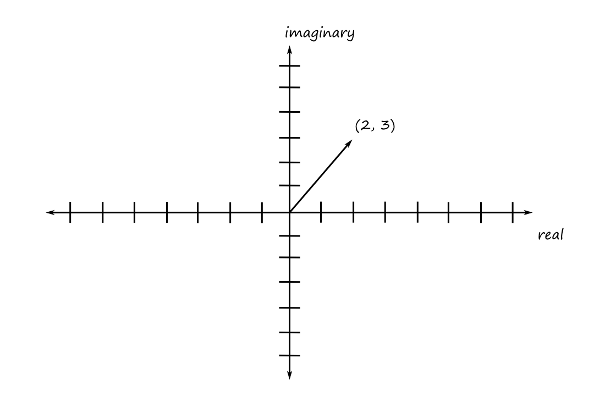
So we can think of complex numbers as vectors on the complex plane.
Notice that if we calculate the length of the vector, we get the modulus. So the "length" of a complex number `c=a+bi` is `|c|=+sqrt(a^2+b^2)`.
To convert a complex number from Cartesian coordinates to polar coordinates, we need `rho` and `theta`:
`rho=sqrt(a^2+b^2)`
`theta=tan^(-1)(b/a)`
To go back from polar to Cartesian:
`a=rho cos(theta)`
`b=rho sin(theta)`
From this, we have that a complex number `c=a+bi` can be written as
`c=rhocos(theta)+rhosin(theta)i`
`=rho(cos(theta)+isin(theta))`
Euler's formula states that `e^(itheta)=cos(theta)+isin(theta)`. Using this, we can rewrite a complex number in exponential form as
`c=rhoe^(itheta)`
Let `c_1=(rho_1,theta_1)` and `c_2=(rho_2,theta_2)`.
`c_1xxc_2=(rho_1,theta_1)xx(rho_2,theta_2)=(rho_1rho_2,theta_1+theta_2)`
A complex vector space is a set of vectors where each element of a vector is a complex number.
For example, `CC^4` is the set of `4`-element vectors and an element of `CC^4` would look like this:
`[[6-4i],[7+3i],[4.2-8.1i],[-3i]]`
`CC^(mxxn)` is the set of `mxxn` matrices, and it is also a complex vector space.
For a complex matrix `A`,
A set of complex vectors `B` is a basis of a complex vector space if
For two vectors `V_1=[[r_0],[r_1],[vdots],[r_n]]` and `V_2=[[r_0'],[r_1'],[vdots],[r_n']]`, the inner product is defined as
`(:V_1,V_2:)=V_1^T***V_2=sum_(j=0)^nr_jr_j'`
For complex vectors, the inner product is defined as
`(:V_1,V_2:)=V_1^†***V_2`
The norm (length) of a vector `V` is defined as
`abs(V)=sqrt((:V,V:))`
Two vectors are orthogonal if their inner product is equal to `0`.
A basis is orthogonal if all the vectors in the basis are pairwise orthogonal to each other.
`(:V_j,V_k:)=0` for `j ne k`
An orthogonal basis is orthonormal if all the vectors in the basis is of norm `1`.
`(:V_j,V_k:)={(1,if j=k),(0,if j ne k):}`
A complex matrix `A` is hermitian if `A^†=A`.
A matrix is unitary if the matrix is invertible, and its inverse is its adjoint.
`U***U^†=U^†***U=I`
A matrix `A` is invertible if there exists `A^(-1)` such that
`A***A^(-1)=A^(-1)***A=I`
For vectors,
`[[x],[y]]ox[[a],[b],[c]]=[[x cdot [[a],[b],[c]]],[y cdot [[a],[b],[c]]]]`
For matrices,
`[[a_(0,0),a_(0,1)],[a_(1,0),a_(1,1)]]ox[[b_(0,0),b_(0,1),b_(0,2)],[b_(1,0),b_(1,1),b_(1,2)],[b_(2,0),b_(2,1),b_(2,2)]]=[[a_(0,0) cdot [[b_(0,0),b_(0,1),b_(0,2)],[b_(1,0),b_(1,1),b_(1,2)],[b_(2,0),b_(2,1),b_(2,2)]], a_(0,1) cdot [[b_(0,0),b_(0,1),b_(0,2)],[b_(1,0),b_(1,1),b_(1,2)],[b_(2,0),b_(2,1),b_(2,2)]]], [a_(1,0) cdot [[b_(0,0),b_(0,1),b_(0,2)],[b_(1,0),b_(1,1),b_(1,2)],[b_(2,0),b_(2,1),b_(2,2)]], a_(1,1) cdot [[b_(0,0),b_(0,1),b_(0,2)],[b_(1,0),b_(1,1),b_(1,2)],[b_(2,0),b_(2,1),b_(2,2)]]]]`
`=[[a_(0,0)xxb_(0,0),a_(0,0)xxb_(0,1),a_(0,0)xxb_(0,2),a_(0,1)xxb_(0,0),a_(0,1)xxb_(0,1),a_(0,1)xxb_(0,2)],[a_(0,0)xxb_(1,0),a_(0,0)xxb_(1,1),a_(0,0)xxb_(1,2),a_(0,1)xxb_(1,0),a_(0,1)xxb_(1,1),a_(0,1)xxb_(1,2)],[a_(0,0)xxb_(2,0),a_(0,0)xxb_(2,1),a_(0,0)xxb_(2,2),a_(0,1)xxb_(2,0),a_(0,1)xxb_(2,1),a_(0,1)xxb_(2,2)],[a_(1,0)xxb_(0,0),a_(1,0)xxb_(0,1),a_(1,0)xxb_(0,2),a_(1,1)xxb_(0,0),a_(1,1)xxb_(0,1),a_(1,1)xxb_(0,2)],[a_(1,0)xxb_(1,0),a_(1,0)xxb_(1,1),a_(1,0)xxb_(1,2),a_(1,1)xxb_(1,0),a_(1,1)xxb_(1,1),a_(1,1)xxb_(1,2)],[a_(1,0)xxb_(2,0),a_(1,0)xxb_(2,1),a_(1,0)xxb_(2,2),a_(1,1)xxb_(2,0),a_(1,1)xxb_(2,1),a_(1,1)xxb_(2,2)]]`
Now that the linear algebra is over, we'll look at the components of quantum computers.
A bit is a unit of information describing a classical system that has only two states (a two-dimensional classical system). Typically these states can be thought of as "on" and "off" or "true" and "false" and are represented by `0` and `1`.
We denote the states as `|0:)` and `|1:)`, which can be represented as matrices `[[1],[0]]` and `[[0],[1]]` respectively. We can think of it as having a `1` in the `0^text(th)` index, so that represents the `|0:)` state and having a `1` in the `1^text(st)` index, so that represents the `|1:)` state. This is reflected with the notation
`|0:)=``{:[0],[1]:}[[1],[0]]`
`|1:)=``{:[0],[1]:}[[0],[1]]`
The `|` with the `:)` is called Dirac ket notation.
A qubit is a quantum bit. So it is a unit of information describing a two-dimensional quantum system. We can also represent a qubit using a matrix, but instead of just `0`s and `1`s, the entries are complex numbers. So `[[c_0],[c_1]]` represents a qubit.
A qubit also has the requirement that `abs(c_0)^2+abs(c_1)^2=1`. This is because `abs(c_0)^2` is the probability that the qubit is in state `|0:)` and `abs(c_1)^2` is the probability that the qubit is in state `|1:)`. In a sense, a qubit is in both states at the same time until it is measured. Once a qubit is measured, it collapses to become a bit, which at that point, means it is definitively either in state `|0:)` or `|1:)`.
Since the bits `|0:)` and `|1:)` are a basis of `CC^2`, any qubit can be written as
`[[c_0],[c_1]]=c_0 cdot [[1],[0]]+c_1 cdot [[0],[1]]=c_0``|0:)+c_1``|1:)`
Let's consider the complex vector `V=[[5+3i],[6i]]`. We can turn this complex vector into a qubit by normalizing it, that is, dividing each entry by the length of the vector (recall that the sum of the square of the entries has to equal `1` for it to be a qubit).
The length of the vector is
`abs(V)=sqrt((:V,V:))=sqrt([5-3i,-6i][[5+3i],[6i]])=sqrt(34+36)=sqrt(70)`
So the qubit is
`V/sqrt(70)=[[(5+3i)/sqrt(70)],[(6i)/sqrt(70)]]=(5+3i)/sqrt(70)``|0:)``+(6i)/sqrt(70)``|1:)`
After measuring the qubit, the probability that it is found in state `|0:)` is `abs(c_0)^2=34/70` and the probability that it is found in state `|1:)` is `abs(c_1)^2=36/70`.
Suppose we have two qubits `|0:)` and `|1:)`. They can be written as a pair of qubits as `|0:) otimes ``|1:)` or `|0 otimes 1:)`. If we calculate the tensor product, we end up with
`[[0],[1],[0],[0]]`
The tensor product is implicitly understood, so it can also be denoted as `|01:)`.
For all pairs of two qubits we have
`|00:)``=[[1],[0],[0],[0]]`
`|01:)``=[[0],[1],[0],[0]]`
`|10:)``=[[0],[0],[1],[0]]`
`|11:)``=[[0],[0],[0],[1]]`
Again, the indexes idea works here:
This is reflected with the notation
`|00:)=``{:[00],[01],[10],[11]:}[[1],[0],[0],[0]]`
`|01:)=``{:[00],[01],[10],[11]:}[[0],[1],[0],[0]]`
`|10:)=``{:[00],[01],[10],[11]:}[[0],[0],[1],[0]]`
`|11:)=``{:[00],[01],[10],[11]:}[[0],[0],[0],[1]]`
Gates are operators that manipulate bits. They take in bits as input and outputs one bit. The classical gates are pretty much just the boolean operators. We can represent gates with matrices.
NOT of `|0:)` equals `|1:)` and NOT of `|1:)` equals `|0:)`. The matrix representation is
`[[0,1],[1,0]]`
We can confirm that the matrix above is indeed the matrix for the NOT operator.
`[[0,1],[1,0]][[1],[0]]=[[0],[1]]`
NOT of `|0:)` equals `|1:)`
`[[0,1],[1,0]][[0],[1]]=[[1],[0]]`
NOT of `|1:)` equals `|0:)`
The matrix representation of the AND gate is
`[[1,1,1,0],[0,0,0,1]]`
We can confirm that the matrix above is indeed the matrix for the AND operator.
`[[1,1,1,0],[0,0,0,1]][[1],[0],[0],[0]]=[[1],[0]]`
AND `|00:)` equals `|0:)`
`[[1,1,1,0],[0,0,0,1]][[0],[1],[0],[0]]=[[1],[0]]`
AND `|01:)` equals `|0:)`
`[[1,1,1,0],[0,0,0,1]][[0],[0],[1],[0]]=[[1],[0]]`
AND `|10:)` equals `|0:)`
`[[1,1,1,0],[0,0,0,1]][[0],[0],[0],[1]]=[[0],[1]]`
AND `|11:)` equals `|1:)`
The matrix representation of the OR gate is
`[[1,0,0,0],[0,1,1,1]]`
NAND is "not and". The matrix representation of the NAND gate is (unsurprisingly)
`[[0,0,0,1],[1,1,1,0]]`
There's another way to derive the matrix for the NAND gate. NAND is the result of performing the AND operation followed by the NOT operation. We can sequentially apply the operations one by one, but we can also multiply their matrices to get the matrix that produces the same result.
`NOT *** AND = [[0,1],[1,0]] *** [[1,1,1,0],[0,0,0,1]] = [[0,0,0,1],[1,1,1,0]]`
If the input of one operation depends on the output of another operation, then those are sequential operations.
If two operations are working with different bits and their inputs and outputs don't depend on each other, then those operations are parallel. With parallel operations, we perform tensor multiplication between them.
For example, consider one of DeMorgan's laws:
`not(not P ^^ not Q) = P vv Q`
The matrix representation of this is
`NOT *** AND *** (NOT otimes NOT) = OR`
The two NOT operators in `not P ^^ not Q` are acting on different bits, so they are parallel.
The outermost NOT operator can only be performed after the AND operator, so they are sequential.
In the quantum world, only reversible operations are allowed. Reversible means that you can look at the output and know what the original input was.
For example, the NOT operation is reversible because if the output is `|0:)`, we know the input was `|1:)` (and vice versa). The AND operation is not reversible because if the output is `|0:)`, we don't know if the input was `|00:)`, `|01:)`, or `|10:)`.
A computer with reversible circuits and programs would (theoretically) not use any energy. Let's see how we get to this conclusion.
Erasing information (as opposed to writing information) causes energy loss and heat. Landauer showed this, so this idea has become known as Landauer's principle.
Writing information is a reversible process. Imagine there's a blank chalkboard. If we write something and someone else comes in and erases it (i.e. reverses the writing) then the board gets returned to its original state.
On the other hand, erasing information is an irreversible process. If there's already writing on the chalkboard and we erase it, someone else coming in would have no idea what was originally written on the chalkboard, i.e., they would not know how to reverse the erasing to bring the chalkboard back to its original state.
When we erase the chalkboard, the chalk particles get dispersed into the air, which is analogous to energy being dispersed. So erasing information causes energy loss.
So a computer with irreversible circuits uses energy whereas a computer with reversible circuits doesn't.
Another reversible gate is the controlled-NOT gate. It has two inputs and two outputs.
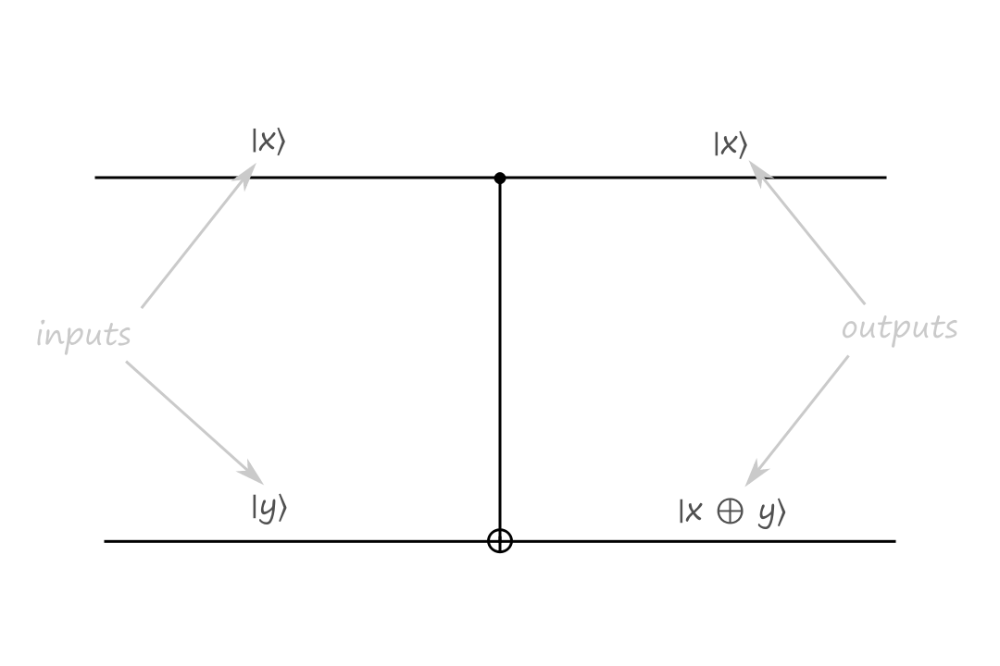
The top input is called the control bit because it controls what the output will be. The black filled circle indicates that the input to the left of it is the control bit. If the control bit is `|0:)`, then the bottom output stays the same.
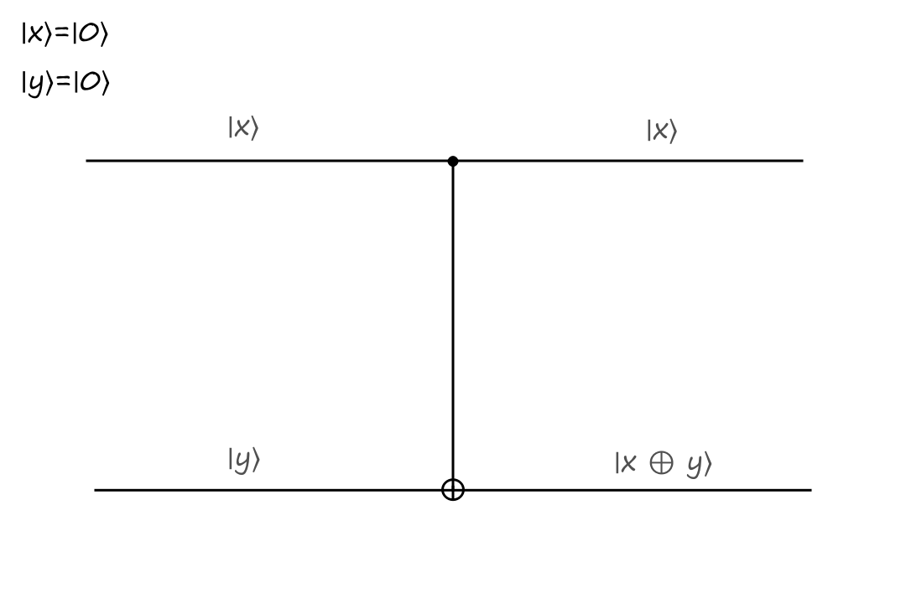
The inputs are `|x:)=``|0:)`, `|y:)=``|0:)` and the outputs are `|x:)=``|0:)`, `|y:)=``|0:)`.
If the control bit is `|1:)`, then the bottom output is calculated depending on what type of operation the gate is. In the CNOT gate, the bottom output is the exclusive or of `|x:)` and `|y:)`.
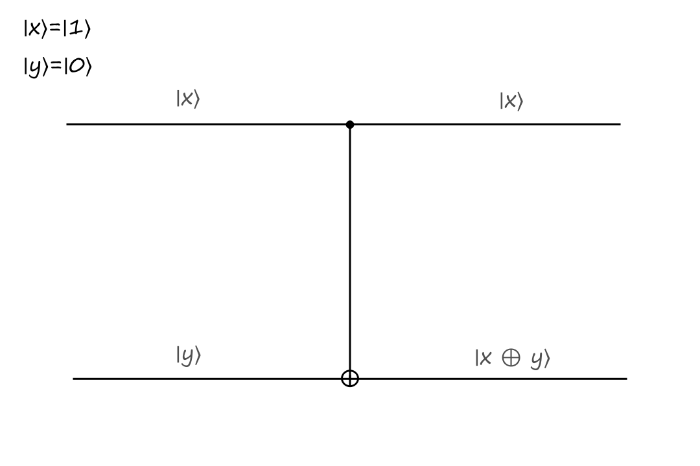
The inputs are `|x:)=``|1:)`, `|y:)=``|0:)` and the outputs are `|x:)=``|1:)`, `|y:)=``|1:)`.
The CNOT gate takes `|x,y:)` to `|x,x oplus y:)`.
The matrix representation of the CNOT gate is
`[[1,0,0,0],[0,1,0,0],[0,0,0,1],[0,0,1,0]]`
There's another way to derive and interpret the matrix representation.
`{:[00,01,10,11]:}`
`{:[00],[01],[10],[11]:}[[1,0,0,0],[0,1,0,0],[0,0,0,1],[0,0,1,0]]`
(ignore the bad alignment; idk how to do this with AsciiMath)
The numbers at the top of the matrix can be seen as the inputs to the gate, and the numbers to the left of the matrix can be seen as the outputs of the gate. So `00` is `|x:)=``|0:),``|y:)=``|0:)` and `01` is `|x:)=``|0:),``|y:)=``|1:)`. The `1` in the matrix means that whatever row the `1` is in is the output for that column.
So for `|x:)=``|1:),``|y:)=``|1:)`, the output is `|x:)=``|1:),``|y:)=``|0:)`, which is consistent with the behavior of the CNOT gate.
The CNOT gate is reversible because it can be reversed by itself (meaning that we apply the CNOT operation twice). Here's what that looks like:
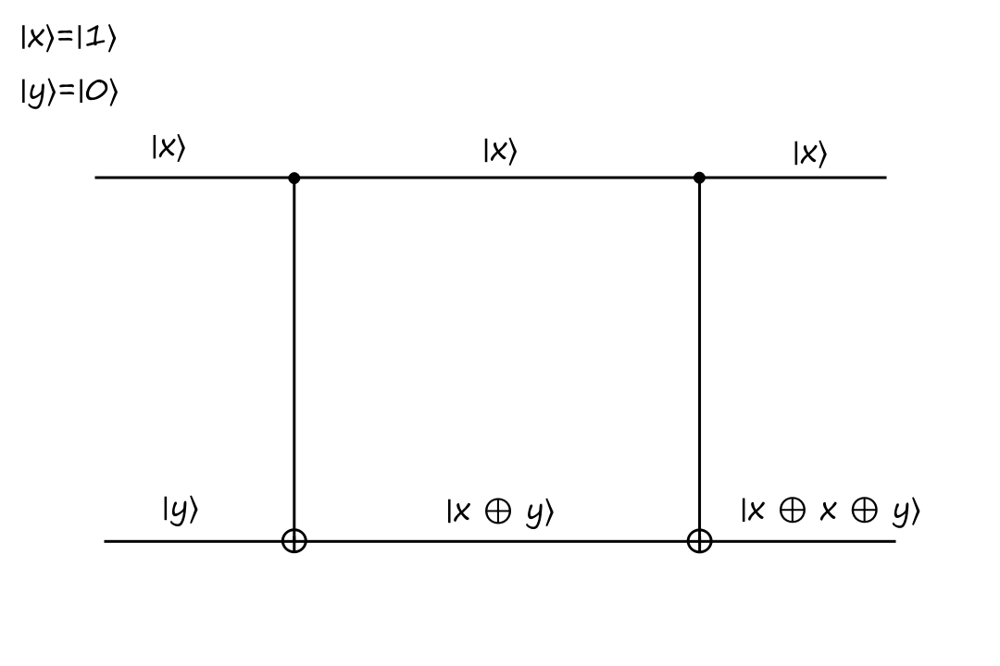
Informally, the construction of this gate can be thought of as:
The top output of the CNOT gate is just a copy of the top input. The bottom output of the CNOT gate is the top input `oplus` the bottom input.
So if we were to attach the CNOT gate again, then the top output is just a copy of the top input. And the bottom output is the top input `oplus` the bottom input (the bottom input is `|x oplus y:)`).
`x oplus x` equals `0` and `0 oplus y` equals `y`, so the final output is always `y`.
(The reversible gates are also quantum gates, but idk, we'll have a separate quantum gates section.)
The Hadamard gate is a gate that puts a qubit into a superposition where both states `|0:)` and `|1:)` are equally likely. The matrix representation is
`[[1/sqrt(2),1/sqrt(2)],[1/sqrt(2),-1/sqrt(2)]]`
This is what it looks like to apply the Hadamard matrix to a qubit in state `|0:)`:
`H``|0:)``=[[1/sqrt(2),1/sqrt(2)],[1/sqrt(2),-1/sqrt(2)]][[1],[0]]`
`=[[1/sqrt(2)],[1/sqrt(2)]]`
`=1/sqrt(2)[[1],[0]]+1/sqrt(2)[[0],[1]]`
`=1/sqrt(2)``|0:)``+1/sqrt(2)``|1:)`
This means that the qubit has a `(1/sqrt(2))^2=1/2` chance to be in state `|0:)` or `|1:)` when measured.
`H``|0:)=``1/sqrt(2)``|0:)``+1/sqrt(2)``|1:)` is also denoted as `|+:)` and `H``|1:)=``1/sqrt(2)``|0:)``-1/sqrt(2)``|1:)` is also denoted as `|- :)`.
(Unfortunately, I found this out after already having written a lot of this, so I don't use this notation much.)
Suppose we're in a two-qubit system `|q_1q_0:)` and both qubits start in state `|0:)`. This is what it looks like to apply the Hadamard gate to `q_0`:
`|0:)otimes H``|0:)`
`=``|0:)``otimes1/sqrt(2)``|0:)``+1/sqrt(2)``|1:)`
`=1/sqrt(2)``|00:)``+1/sqrt(2)``|01:)`
Similar to how a complex number can be visualized as an arrow on a 2D plane, a qubit can be visualized as an arrow in a sphere.
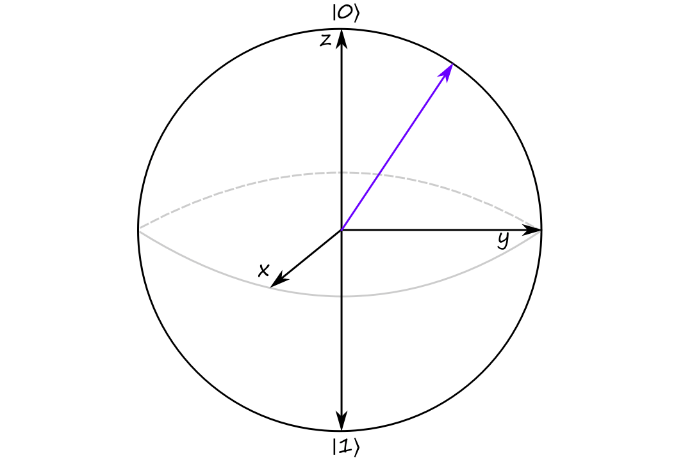
Let `|psi:)=c_0``|0:)+c_1``|1:)` where `abs(c_0)^2+abs(c_1)^2=1` be a qubit.
Rewriting it in polar exponential form (using `c_0=r_0e^(iphi_0)` and `c_1=r_1e^(iphi_1)`), we get
`|psi:)``=r_0e^(iphi_0)``|0:)``+r_1e^(iphi_1)``|1:)`
It turns out that if we multiply a quantum state by a (complex) number, the state doesn't change. So we can multiply both sides by `e^(-iphi_0)` to get
`e^(-iphi_0)``|psi:)``=e^(-iphi_0)(``r_0e^(iphi_0)``|0:)``+r_1e^(iphi_1)``|1:))`
`=r_0``|0:)``+r_1e^(iphi_1-iphi_0)``|1:)`
`=r_0``|0:)``+r_1e^(i(phi_1-phi_0))``|1:)`
`=r_0``|0:)``+r_1e^(iphi)``|1:)`
(let `phi=(phi_1-phi_0)`)
To simplify this further, we'll take a step back for a bit. Since this is a qubit, we have `abs(c_0)^2+abs(c_1)^2=1`. Which means we have
`abs(r_0e^(iphi_0))^2+abs(r_1e^(iphi_1))^2=1`
`abs(r_0)^2abs(e^(iphi_0))^2+abs(r_1)^2abs(e^(iphi_1))^2=1`
Note that `e^(-iphi)` has norm `1`.
`e^(-iphi)=cos(phi)+isin(-phi)=cos(phi)-isin(phi)`
(Recall that the norm/modulus of a complex number is `sqrt(a^2+b^2)`.)
`abs(e^(-iphi))=sqrt(cos^2(phi)+(-sin(phi))^2)=sqrt(cos^2(phi)+sin^2(phi))=sqrt(1)=1`
So we end up with
`abs(r_0)^2+abs(r_1)^2=1`
`r_0^2+r_1^2=1`
We can substitute `r_0=cos(theta)` and `r_1=sin(theta)` and go back to simplifying:
`|psi:)``=r_0``|0:)``+r_1e^(iphi)``|1:)`
`=cos(theta)``|0:)``+e^(iphi)sin(theta)``|1:)`
All of this is to show that a qubit can be written in terms of `2` parameters: `phi` and `theta`.
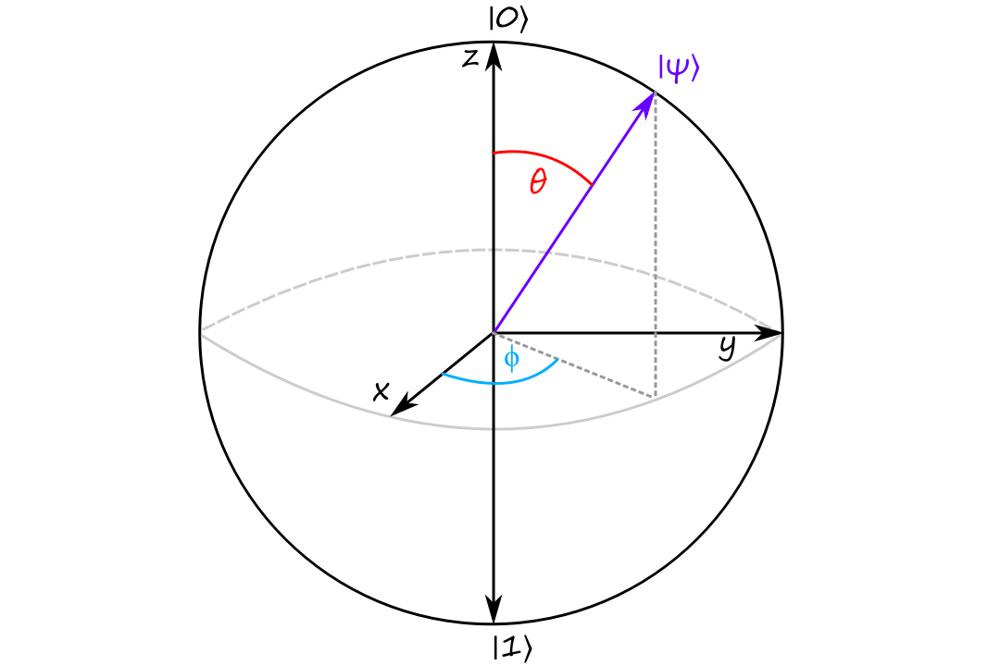
`0 le phi lt 2pi` and `0 le theta lt pi/2` are enough to cover all possible qubits.
The north pole of the Bloch sphere corresponds to `|0:)` and the south pole corresponds to `|1:)`. If the qubit is pointing more north, then it is more likely to collapse to `|0:)` when it is measured.
`theta` controls the chance that the qubit collapses to `|0:)` or to `|1:)`.
If we rotate the qubit around the `z` axis, we are performing a phase change.
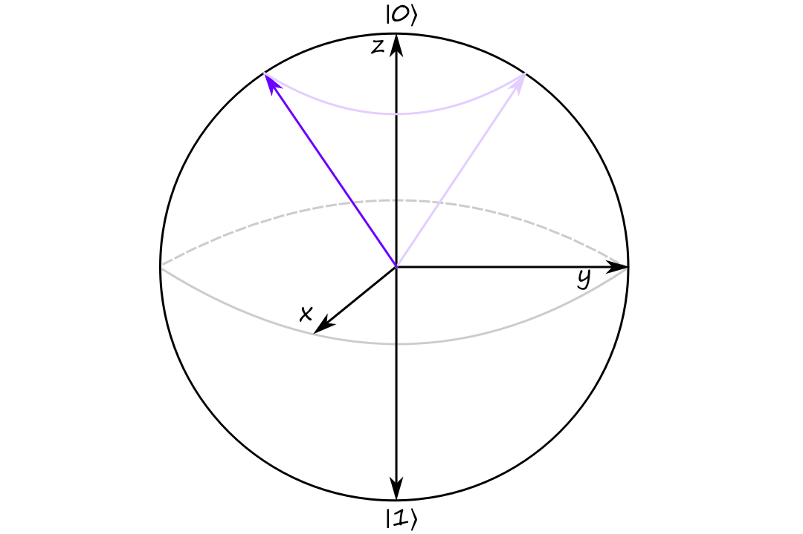
`phi` controls the qubit's phase.
Now we can really get into the quantum stuff. You know, the stuff like Schrödinger's cat and Heisenberg's uncertainty principle. Well, not these two concepts specifically, but the general ideas behind these concepts, like things not being predictable; things being in two states at the same time; and all that.
(The book uses marbles and vertices, but it's Halloween season as I'm writing this, so mazes and people instead!) Imagine we had a maze with `6` rooms.
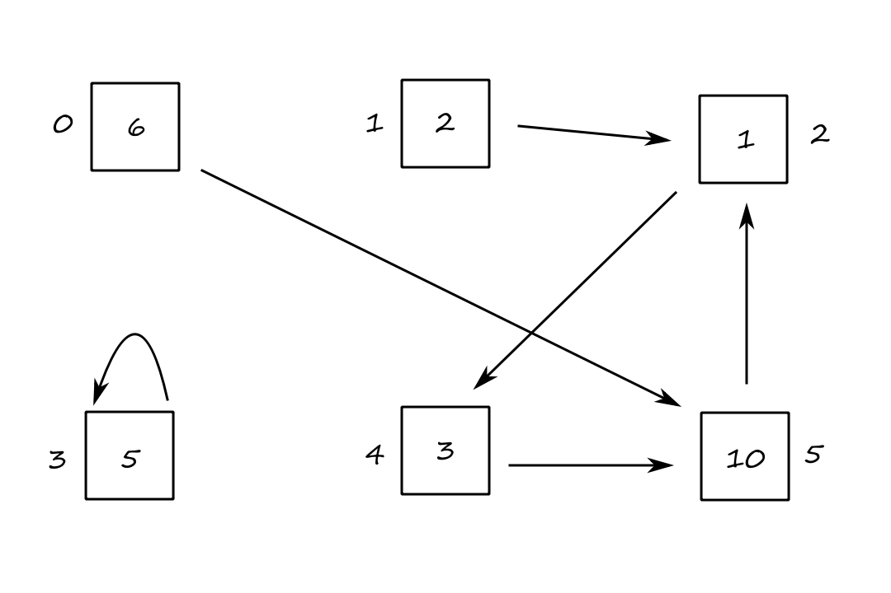
There are currently `6` people in room `0`, `2` people in room `1`, and so on. The arrows point to the next room that everyone will be moving to. So after following the arrows once (which we'll refer to as a "time click"), all `6` people in room `0` will be moving to room `5`, and all `10` people in room `5` will be moving to room `2`, and so on.
We can represent this transition as a matrix:
`[[0, 0, 0, 0, 0, 0],[0, 0, 0, 0, 0, 0],[0, 1, 0, 0, 0, 1],[0, 0, 0, 1, 0, 0],[0, 0, 1, 0, 0, 0],[1, 0, 0, 0, 1, 0]]`
(This matrix can be interpreted as: the room indicated by the row index is receiving from the room indicated by the column index. So room `4` (row index `4`) is receiving from room `2` (column index `2`)).
In my head, I'm calling this a "transition matrix". It can be officially referred to as the adjacency matrix.
If we represent the current state of the maze with the vector `[[6],[2],[1],[5],[3],[10]]`, we can multiply it by the matrix to find out what the next state of the maze will be:
`[[0, 0, 0, 0, 0, 0],[0, 0, 0, 0, 0, 0],[0, 1, 0, 0, 0, 1],[0, 0, 0, 1, 0, 0],[0, 0, 1, 0, 0, 0],[1, 0, 0, 0, 1, 0]][[6],[2],[1],[5],[3],[10]]=[[0],[0],[12],[5],[1],[9]]`
For example, this means that there will be `12` people in room `2`, which we can manually confirm is true.
If we want to get the state of the maze after two time clicks, we repeat the process but with the new current state.
`[[0, 0, 0, 0, 0, 0],[0, 0, 0, 0, 0, 0],[0, 1, 0, 0, 0, 1],[0, 0, 0, 1, 0, 0],[0, 0, 1, 0, 0, 0],[1, 0, 0, 0, 1, 0]][[0],[0],[12],[5],[1],[9]]`
Let `M` be the transition matrix. If `X` is the state of the system at time `t`, then `Y` is the state of the system at time `t+1`.
`Y[i]=(MX)[i]=sum_(k=0)^5M[i,k]X[k]`
In words, this is saying that the number of objects at vertex `i` is equal to the sum of all the objects that are on vertices with edges connecting to vertex `i`.
Let's consider a different type of maze with `3` rooms and only `1` person.
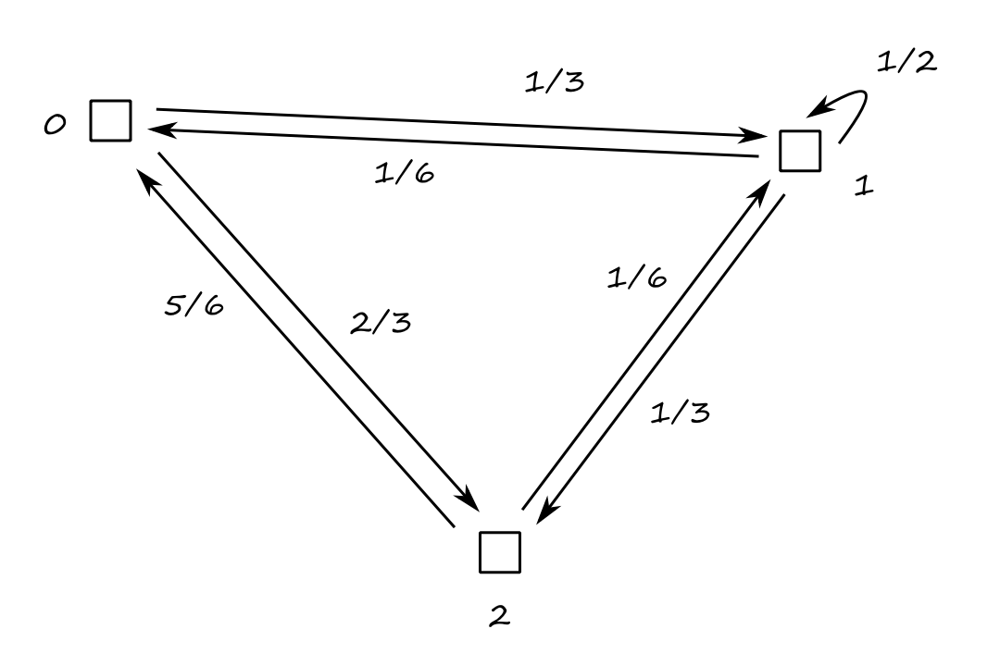
For example, if the person is in room `0`, they have a `1/3` chance of choosing to go to room `1` and a `2/3` chance of choosing to go to room `2`.
`[[0,1/6,5/6],[1/3,1/2,1/6],[2/3,1/3,0]]`
Notice that each row sums up to `1` and each column sums up to `1`. This is a doubly stochastic matrix.
Suppose we came late and we don't know where the person started. Let's say there's a `1/6` chance they're in room `0`, a `1/6` chance they're in room `1`, and a `2/3` chance they're in room `2`, i.e., the current state of the maze can be represented as `[[1/6],[1/6],[2/3]]`.
We can find out the probabilities for which room they might be in after one time click by multiplying the transition matrix by the current state:
`[[0,1/6,5/6],[1/3,1/2,1/6],[2/3,1/3,0]][[1/6],[1/6],[2/3]]=[[21/36],[9/36],[6/36]]`
So after following the arrows once, there's a `21/36` chance the person is in room `0`, a `9/36` chance the person is in room `1`, and a `6/36` chance the person is in room `2`.
Just for fun, let's take a look at the tranpose of the transition matrix:
`[[0,1/3,2/3],[1/6,1/2,1/3],[5/6,1/6,0]]`
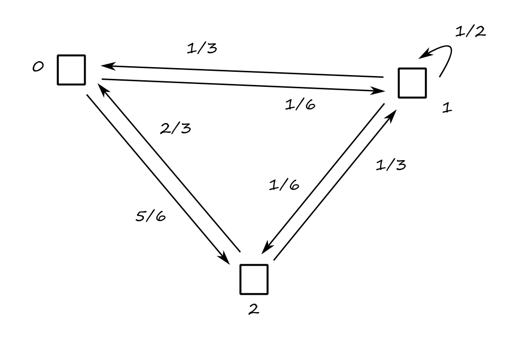
Notice that this is the same system but with the arrows reversed. It's like going back in time (by one time click) or reversing the footage.
The transpose of the transition matrix takes a state from time `t` to `t-1`.
(The book uses bullets and targets, but bullets kinda seem like they don't really make sense in this example.) Suppose we're playing a carnival game where we're throwing baseballs through one of two holes. Behind the holes is a mechanism that will then shoot the baseballs at one of three targets. (Assume we're good enough that we always successfully throw the baseballs into a hole, and that the mechanism always hits a target.)
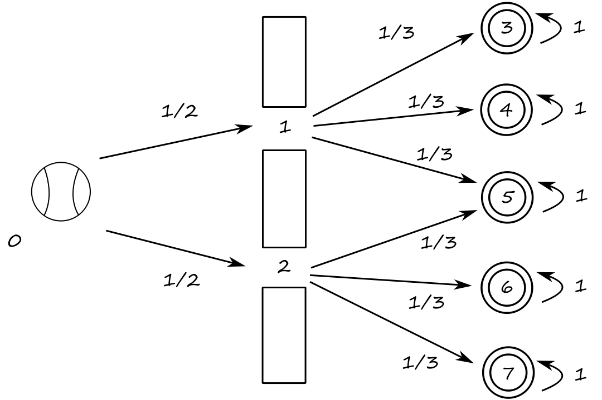
At position `0`, the baseball has a `1/2` chance to go through hole `2`, which then has a `1/3` chance of hitting target `6`.
Let's say it takes one time click for a baseball to reach the hole and another time click for the baseball to hit a target. The transition matrix is
`[[0,0,0,0,0,0,0,0],[1/2,0,0,0,0,0,0,0],[1/2,0,0,0,0,0,0,0],[0,1/3,0,1,0,0,0,0],[0,1/3,0,0,1,0,0,0],[0,1/3,1/3,0,0,1,0,0],[0,0,1/3,0,0,0,1,0],[0,0,1/3,0,0,0,0,1]]`
As we saw earlier in the deterministic maze, we can get the state of the system after two time clicks by calculating the next state twice. Another way to get the state of the system after two time clicks is to instead multiply the transition matrix by itself twice:
`[[0,0,0,0,0,0,0,0],[1/2,0,0,0,0,0,0,0],[1/2,0,0,0,0,0,0,0],[0,1/3,0,1,0,0,0,0],[0,1/3,0,0,1,0,0,0],[0,1/3,1/3,0,0,1,0,0],[0,0,1/3,0,0,0,1,0],[0,0,1/3,0,0,0,0,1]][[0,0,0,0,0,0,0,0],[1/2,0,0,0,0,0,0,0],[1/2,0,0,0,0,0,0,0],[0,1/3,0,1,0,0,0,0],[0,1/3,0,0,1,0,0,0],[0,1/3,1/3,0,0,1,0,0],[0,0,1/3,0,0,0,1,0],[0,0,1/3,0,0,0,0,1]]`
`=[[0,0,0,0,0,0,0,0],[0,0,0,0,0,0,0,0],[0,0,0,0,0,0,0,0],[1/6,1/3,0,1,0,0,0,0],[1/6,1/3,0,0,1,0,0,0],[1/3,1/3,1/3,0,0,1,0,0],[1/6,0,1/3,0,0,0,1,0],[1/6,0,1/3,0,0,0,0,1]]`
If the baseball starts at position `0`, then the state of the baseball is `[[1],[0],[0],[0],[0],[0],[0],[0]]`. After two time clicks, the state of the baseball is
`[[0,0,0,0,0,0,0,0],[0,0,0,0,0,0,0,0],[0,0,0,0,0,0,0,0],[1/6,1/3,0,1,0,0,0,0],[1/6,1/3,0,0,1,0,0,0],[1/3,1/3,1/3,0,0,1,0,0],[1/6,0,1/3,0,0,0,1,0],[1/6,0,1/3,0,0,0,0,1]][[1],[0],[0],[0],[0],[0],[0],[0]]=[[0],[0],[0],[1/6],[1/6],[1/3],[1/6],[1/6]]`
Notice that the probability of the baseball hitting target `5` is `1/3` because there is a `1/6+1/6=1/3` chance of hitting target `5`.
The difference between quantum systems and classical probabilistic systems is that quantum systems deal with complex numbers as probabilities while classical probabilistic systems use real numbers as probabilities.
Probabilities in quantum systems are calculated as the square of the modulus of the complex number, i.e., `0 le abs(c)^2 le 1`.
The fact that complex numbers are used as probabilities is significant because complex probabilities can decrease when added together. Real-numbered probabilities can only increase when added together.
For real numbers `0 le p_1,p_2 le 1`, we have that `p_1+p_2gep_1` and `p_1+p_2gep_2`.
For complex numbers `c_1,c_2`, it is not necessarily true that `abs(c_1+c_2)^2 ge abs(c_1)^2` and that `abs(c_1+c_2)^2 ge abs(c_2)^2`.
For example, if `c_1=5+3i` and `c_2=-3-2i`, then
`abs(c_1)^2=(sqrt(5^2+3^2))^2=34`
`abs(c_2)^2=(sqrt((-3)^2+(-2)^2))^2=13`
but
`abs(c_1+c_2)^2=abs(2-i)^2=5`
which is less than both `34` and `13`.
The fact that complex numbers can cancel each other out when added is referred to as interference.
An example of a quantum system could look like this:
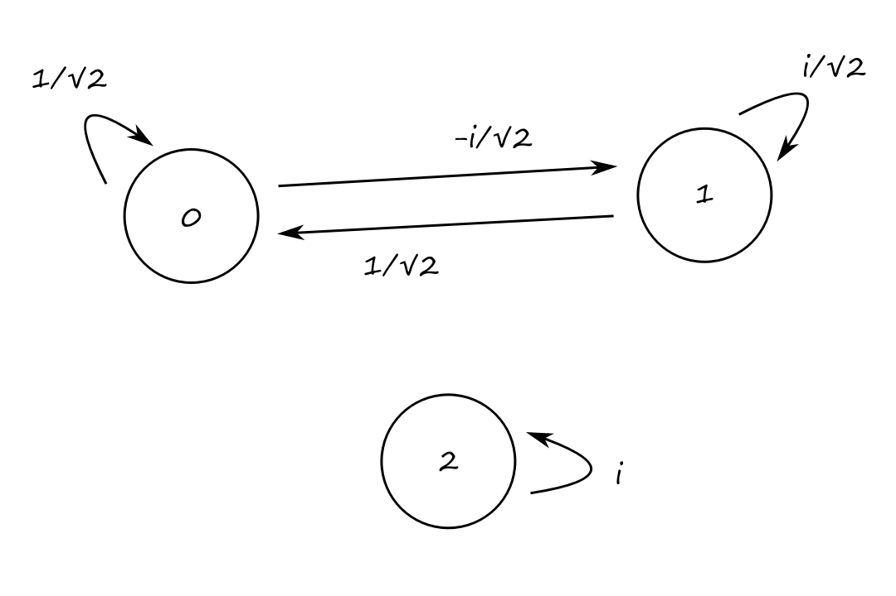
for which the corresponding transition matrix is
`U=[[1/sqrt(2),1/sqrt(2),0],[(-i)/sqrt(2),i/sqrt(2),0],[0,0,i]]`
Notice that this is a unitary matrix, meaning that its inverse is its adjoint.
`U***U^†=[[1/sqrt(2),1/sqrt(2),0],[(-i)/sqrt(2),i/sqrt(2),0],[0,0,i]][[1/sqrt(2),i/sqrt(2),0],[1/sqrt(2),-i/sqrt(2),0],[0,0,-i]]=[[1,0,0],[0,1,0],[0,0,1]]=I`
Also notice that the modulus squared of all the entries results in a doubly stochastic matrix:
`abs(U[i,j])^2=[[1/2,1/2,0],[1/2,1/2,0],[0,0,1]]`
Similar to how we saw in the classical system,
Instead of baseballs and targets, we will now look at photons and measuring devices. We will also deal with complex probabilities, but the setup is still the same as the classical one.
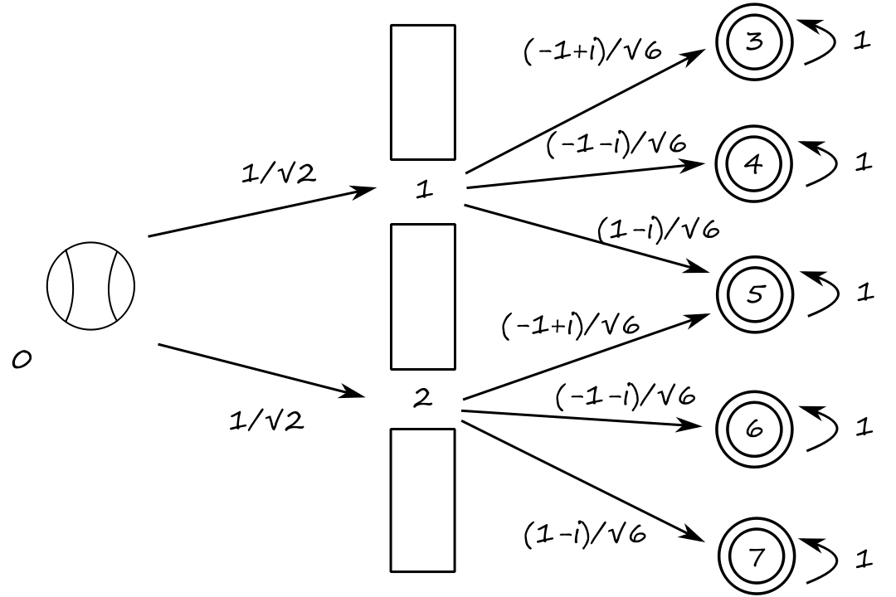
Note that `abs(1/sqrt(2))^2=1/2` and `abs((+-1+-i)/sqrt(6))^2=1/3`.
The adjacency matrix is
`[[0,0,0,0,0,0,0,0],[1/sqrt(2),0,0,0,0,0,0,0],[1/sqrt(2),0,0,0,0,0,0,0],[0,(-1+i)/sqrt(6),0,1,0,0,0,0],[0,(-1-i)/sqrt(6),0,0,1,0,0,0],[0,(1-i)/sqrt(6),(-1+i)/sqrt(6),0,0,1,0,0],[0,0,(-1-i)/sqrt(6),0,0,0,1,0],[0,0,(1-i)/sqrt(6),0,0,0,0,1]]`
The modulus squared of the matrix is
`[[0,0,0,0,0,0,0,0],[1/2,0,0,0,0,0,0,0],[1/2,0,0,0,0,0,0,0],[0,1/3,0,1,0,0,0,0],[0,1/3,0,0,1,0,0,0],[0,1/3,1/3,0,0,1,0,0],[0,0,1/3,0,0,0,1,0],[0,0,1/3,0,0,0,0,1]]`
This is actually the exact same transition matrix as the transition matrix for the baseball game after one time click. (Which, if we think about it, shouldn't be too surprising since the probabilities in both systems are the same.)
But let's see what the transition matrix is after two time clicks.
`[[0,0,0,0,0,0,0,0],[1/sqrt(2),0,0,0,0,0,0,0],[1/sqrt(2),0,0,0,0,0,0,0],[0,(-1+i)/sqrt(6),0,1,0,0,0,0],[0,(-1-i)/sqrt(6),0,0,1,0,0,0],[0,(1-i)/sqrt(6),(-1+i)/sqrt(6),0,0,1,0,0],[0,0,(-1-i)/sqrt(6),0,0,0,1,0],[0,0,(1-i)/sqrt(6),0,0,0,0,1]][[0,0,0,0,0,0,0,0],[1/sqrt(2),0,0,0,0,0,0,0],[1/sqrt(2),0,0,0,0,0,0,0],[0,(-1+i)/sqrt(6),0,1,0,0,0,0],[0,(-1-i)/sqrt(6),0,0,1,0,0,0],[0,(1-i)/sqrt(6),(-1+i)/sqrt(6),0,0,1,0,0],[0,0,(-1-i)/sqrt(6),0,0,0,1,0],[0,0,(1-i)/sqrt(6),0,0,0,0,1]]`
`=[[0,0,0,0,0,0,0,0],[0,0,0,0,0,0,0,0],[0,0,0,0,0,0,0,0],[(-1+i)/sqrt(12),(-1+i)/sqrt(6),0,1,0,0,0,0],[(-1-i)/sqrt(12),(-1-i)/sqrt(6),0,0,1,0,0,0],[0,(1-i)/sqrt(6),(-1+i)/sqrt(6),0,0,1,0,0],[(-1-i)/sqrt(12),0,(-1-i)/sqrt(6),0,0,0,1,0],[(1-i)/sqrt(12),0,(1-i)/sqrt(6),0,0,0,0,1]]`
In terms of the modulus squared:
`=[[0,0,0,0,0,0,0,0],[0,0,0,0,0,0,0,0],[0,0,0,0,0,0,0,0],[1/6,1/3,0,1,0,0,0,0],[1/6,1/3,0,0,1,0,0,0],[0,1/3,1/3,0,0,1,0,0],[1/6,0,1/3,0,0,0,1,0],[1/6,0,1/3,0,0,0,0,1]]`
This is actually almost the exact same transition matrix as the transition matrix for the baseball game after two time clicks. The only difference is row index `5`, column index `0`.
So what happened here?
There's a `1/sqrt(2)((1-i)/sqrt(6))+1/sqrt(2)((-1+i)/sqrt(6))=(1-i)/sqrt(12)+(-1+i)/sqrt(12)=0/sqrt(12)=0` chance of hitting measurement device `5`.
This is a seemingly strange phenomenon: even though there are two ways for a photon to reach measurement device `5`, there will be no photons measured by device `5`. Interference at its finest!
Let the state of a quantum system be given by `X=[[c_0],[c_1],[vdots],[c_(n-1)]]`.
It is wrong to say that the probability of a photon being in position `k` is `abs(c_k)^2`. It is correct to say that the photon in state `X` is in all positions `c_0,c_1,...c_(n-1)` simultaneously. (Recall superposition!)
The photon passes through both slits simultaneously and cancels itself out when it exits both slits.
The probabilities come into play when we perform a measurement, which causes the photon to collapse to position `k` with probability `abs(c_k)^2`.
Electrons "spin". I think there are infinitely many "directions" it could be spinning, but when we measure an electron, it can only be found spinning "up" or "down".
Refer to the Stern-Gerlach experiment.
The generic state for the spin is
`|psi:)=c_0``|uarr:)+c_1``|darr:)`
Suppose we have a particle whose spin is described by the ket
`|psi:)=(3-4i)``|uarr:)+(7+2i)``|darr:)`
The length of the ket is
`sqrt(abs(3-4i)^2+abs(7+2i)^2)`
`=sqrt(sqrt(3^2+(-4)^2)^2+sqrt(7^2+2^2)^2)`
`=sqrt(9+16+49+4)`
`=sqrt(78)`
Suppose we have a start state `|psi:)``=[[c_0],[c_1],[vdots],[c_(n-1)]]` and an end state `|psi':)``=[[c'_0],[c'_1],[vdots],[c'_(n-1)]]`. How likely is it that the start state will end up in the end state? We can measure this by looking at the transition amplitude. To calculate the transition amplitude, we calculate the inner product.
We start by getting the adjoint of the end state. This state is called a bra, and it is denoted as `(:psi'|`.
`(:psi'|``=|:psi':)^†=[bar (c'_0), bar (c'_1), ..., bar (c'_(n-1))]`
The transition amplitude is then calculated as
`(:psi'|psi:)=[bar (c'_0), bar (c'_1), ..., bar (c'_(n-1))][[c_0],[c_1],[vdots],[c_(n-1)]]`
`=bar (c'_0)xxc_0+bar (c'_1)xxc_1+...+bar (c'_(n-1))xxc_(n-1)`
Oh, one thing I forgot to mention is that the states should be normalized first before computing the inner product.
It is possible for a transition amplitude to be `0`. This means that it is impossible for a state to transition to another state, i.e., the states are orthogonal to each other. For example, if an electron is in spin up before being measured, it will never change to spin down after being measured.
This relates to the dot product between two orthogonal vectors being `0`.
Consider a two-particle system where the first particle can only be either `x_0` or `x_1` and the second particle can only be either `y_0` or `y_1`.
Suppose we have a state
`|psi:)=``|x_0:)otimes``|y_1:)+``|x_1:)otimes``|y_1:)`
Let's see if we can write `|psi:)` as the tensor product of two states coming from the two subsystems. In other words, let's see if we can rewrite this state as the tensor product of the first particle with the second particle. In math, let's see if we can find `c_0,c_1,c'_0,c'_1` such that `|psi:)=(c_0``|x_0:)+c_1``|x_1:))otimes(c'_0``|y_0:)+c'_1``|y_1:))`.
Well, we can rewrite it as
`|psi:)=(``|x_0:)+``|x_1:))otimes``|y_1:)`
This means that the state `|psi:)=``|x_0:)otimes``|y_1:)+``|x_1:)otimes``|y_1:)` is separable.
Suppose `x_0=0` (so `x_1` must be `1`) and `y_1=1`. This gives us the state
`|psi:)=``|x_0:)otimes``|y_1:)+``|x_1:)otimes``|y_1:)`
`=``|01:)+``|11:)`
We can see that if the rightmost particle has value `1`, then the other particle can either be `0` or `1`; we don't know for sure. This is what it means to for a state to be separable: knowing the value of one of the particles does not give us information about the value of the other particle.
Let's now consider the state
`|psi:)=``|x_0:)otimes``|y_0:)+``|x_1:)otimes``|y_1:)`
We can see that it's not possible to rewrite this as a tensor product of `x`s and `y`s. So this state is entangled.
Suppose `x_0=0` (so `x_1` must be `1`) and `y_0=0` (so `y_1` must be `1`). This gives us the state
`|psi:)=``|x_0:)otimes``|y_0:)+``|x_1:)otimes``|y_1:)`
`=``|00:)+``|11:)`
We can see that if any of the particles is `0`, then the other particle must be `0`. Likewise, if one of the particles is `1`, then the other particle has to be `1`. This is what it means to for a state to be entangled: knowing the value of one of the particles gives us full information about the value of the other particle.
Suppose `|psi:)=``|x_0:)otimes``|y_0:)+``|x_1:)otimes``|y_1:)` can be written as the tensor product of the two subsystems. To make the proof easier to follow, we can rewrite the state as
`=1``|x_0:)otimes``|y_0:)+0``|x_0:)otimes``|y_1:)+0``|x_1:)otimes``|y_0:)+1``|x_1:)otimes``|y_1:)`
If `|psi:)` can be written as the tensor product of two subsystems, then it is true that
`|psi:)=(c_0``|x_0:)+c_1``|x_1:))otimes(c'_0``|y_0:)+c'_1``|y_1:))`
`=c_0c'_0``|x_0:)otimes``|y_0:)+c_0c'_1``|x_0:)otimes``|y_1:)+c_1c'_0``|x_1:)otimes``|y_0:)+c_1c'_1``|x_1:)otimes``|y_1:)`
Comparing coefficients, we have that
`c_0c'_0=1`
`c_1c'_1=1`
`c_1c'_0=0`
`c_0c'_1=0`
But there are no values for `c_0,c_1,c'_0,c'_1` that can satisfy all four equations.
So `|psi:)` cannot be rewritten as the tensor product of the two subsystems.
For this section, I'll be using a boxed `M` in the diagrams to represent the measurement operator.
Consider a function `f:{0,1}mapsto{0,1}`. We say that the function is balanced if `f(0)nef(1)` and constant if `f(0)=f(1)`. Suppose that we wanted to know for any given `f`, if it is balanced or constant.
Of course, with classical computers, we can easily see if any function is balanced or constant. We simply evaluate `f(0)` and then `f(1)`. But this requires `f` to be evaluated twice. With quantum computers, we can do better.
Suppose we have a function `f` that takes `0` to `1` and `1` to `0`, i.e., `f(0)=1` and `f(1)=0`. We can represent this function as a matrix:
`[[0, 1],[1, 0]]`
(recall that the column is the input and the row is the output)
However, if we want to work in the quantum world, we need to work with unitary matrices. So we need to define a new function `U_f` that encodes `f` as a unitary matrix.
One way to do this is with the following quantum gate `U_f`:
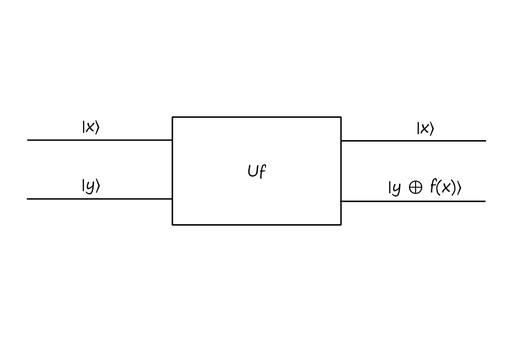
`U_f` is also sometimes referred to as the "oracle".
Note that this gate is unitary.
If we apply the gate to itself, we end up with
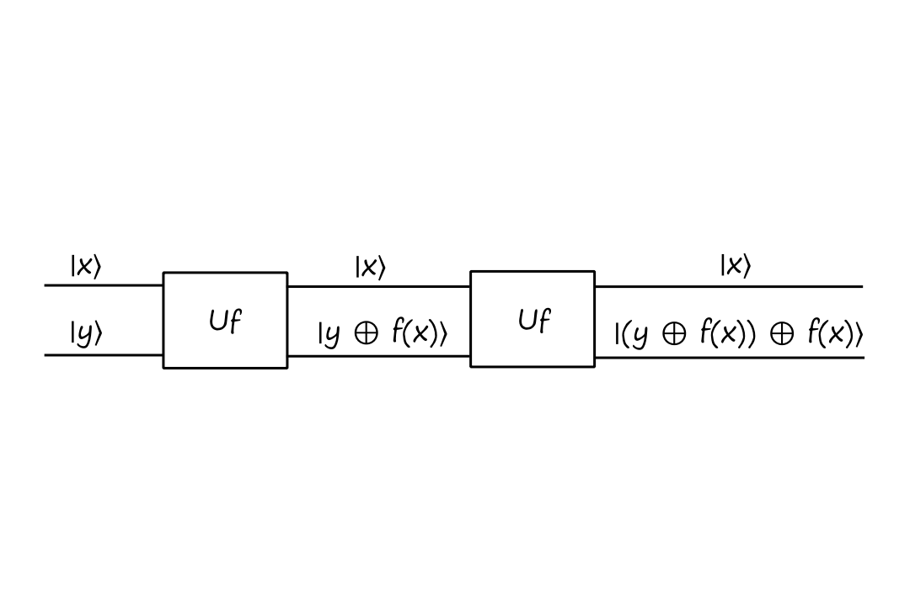
The output evaluates to
`(yoplusf(x))oplusf(x)`
`=yoplus(f(x)oplusf(x))`
`=yoplus(0)`
`=y`
The corresponding unitary matrix for `U_f` is
`{:[00,01,10,11]:}`
`{:[00],[01],[10],[11]:}[[0,1,0,0],[1,0,0,0],[0,0,1,0],[0,0,0,1]]`
This took me a while to understand, but this matrix isn't directly conveying the fact that `f(0)=1` and `f(1)=0`. That's because this is the matrix for `U_f`, not `f`.
It is however, using the fact that `f(0)=1` and `f(1)=0` to determine the output of `U_f`. For example, if `x=0`, then we have `f(x)=1`. If we also have `y=0`, then we have
`|x,y:)mapsto``|x,yoplusf(x):)`
`|0,0:)mapsto``|0,0oplus1:)`
`|0,0:)mapsto``|0,1:)`
So we have this new function `U_f` and we want to use it to determine if `f` is balanced or constant (without having to evaluate `f(x)`).
Let's, arbitrarily, start both inputs at `|0:)` and try applying the Hadamard gate on the top input:
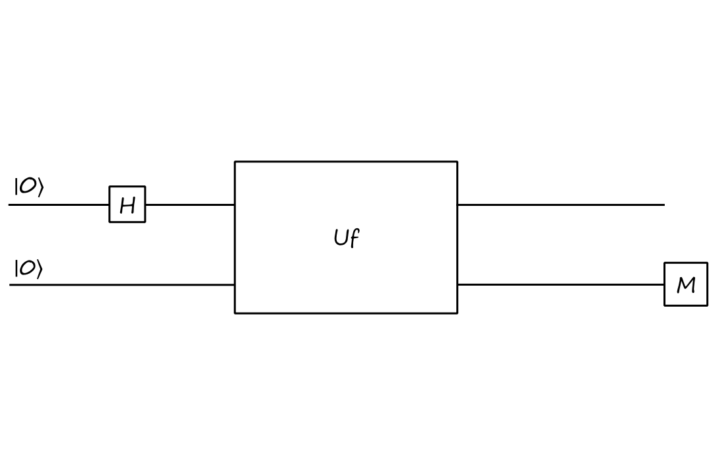
In terms of matrices, this circuit is
`U_f``(HotimesI)(``|0:)otimes``|0:))`
Applying the Hadamard gate to the top input, we get
`=U_f``((``1/sqrt(2)``|0:)``+1/sqrt(2)``|1:))otimes``|0:))`
`=U_f``(``1/sqrt(2)``|00:)``+1/sqrt(2)``|10:))`
Multiplying with `U_f`, we get
`=``1/sqrt(2)``|0,0oplusf(0):)``+1/sqrt(2)``|1,0oplusf(1):)`
`=``1/sqrt(2)``|0,f(0):)``+1/sqrt(2)``|1,f(1):)`
If we measure the bottom qubit, there is a `50%` chance that it will be in state `|f(0):)` and a `50%` chance that it will be in state `|f(1):)`. This doesn't really help us determine if `f` is balanced or constant, so on to attempt 2!
This time, let's start the bottom qubit at `|1:)` and put it in superposition:
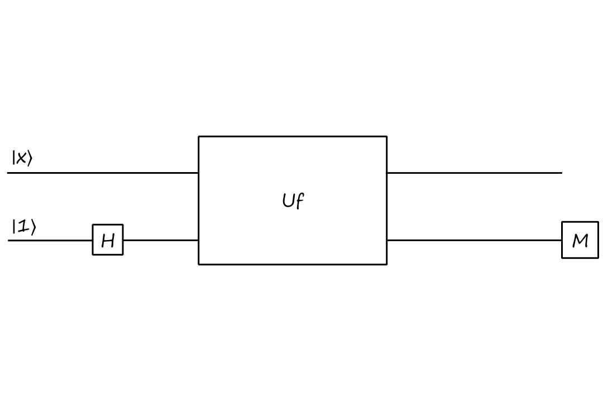
`U_f``(IotimesH)(``|x:)otimes``|1:))`
`=U_f``(``|x:)``otimes(``1/sqrt(2)``|0:)``-1/sqrt(2)``|1:)))`
`=U_f``(``1/sqrt(2)``|x,0:)``-1/sqrt(2)``|x,1:))`
`=``1/sqrt(2)``|x,0oplusf(x):)``-1/sqrt(2)``|x,1oplusf(x):)`
`=``|x:)``1/sqrt(2)(``|f(x)rangle-``|bar(f(x))``rangle``)`
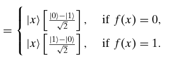
(I could not get it to render in AsciiMath.)
`=(-1)^(f(x))``|x:)``1/sqrt(2)(``|0:)-``|1:))`
If we measure the bottom qubit, it will be either in state `|0:)` or `|1:)`. Again, this doesn't really help us determine if `f` is balanced or constant, so on to attempt 3!
(Spoiler alert: this will be the actual correct algorithm.)
Let's put both inputs into a superposition. And add another Hadamard to the top input for good measure (pun not intended).
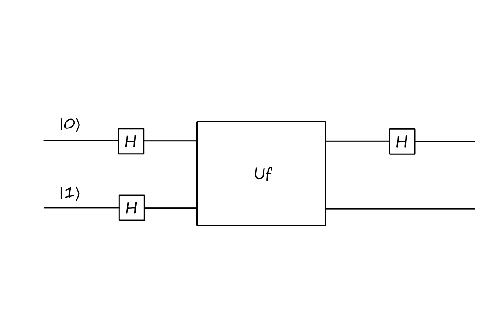
`(HotimesI)U_f``(HotimesH)``|0,1:)`
`=(HotimesI)U_f``(``1/sqrt(2)``(``|0:)``+``|1:))``otimes1/sqrt(2)``(``|0:)``-``|1:)))`
`=(HotimesI)U_f``(``1/2``(``|00:)``-``|01:)``+``|10:)``-``|11:)))`
Factoring out `|0:)` and `|1:)`,
`=(HotimesI)U_f``(``1/2``(``|0:)``(``|0:)-``|1:))``+``|1:)``(``|0:)``-``|1:))))`
Applying `U_f`,
`=(HotimesI)``1/2``(``|0:)``((``|0:)-``|1:))oplusf(0))``+``|1:)``((``|0:)``-``|1:))oplusf(1)))`
"Distributing" the `oplusf(0)` and `oplusf(1)`,
`=(HotimesI)``1/2``(``|0:)``(``|0:)oplusf(0)-``|1:)oplusf(0))``+``|1:)``(``|0:)oplusf(1)``-``|1:)oplusf(1)))`
`=(HotimesI)``1/2``(``|0:)``(``(-1)^(f(0))(``|0:)-``|1:)))+``|1:)``(``(-1)^(f(1))(``|0:)-``|1:))))`
Factoring out `1/sqrt(2)``(``|0:)-``|1:))`,
`=(HotimesI)``1/sqrt(2)``(``|0:)``(-1)^(f(0))+``|1:)``(-1)^(f(1))``)(``1/sqrt(2)``(``|0:)-``|1:))`
Let's take a closer look at `|0:)``(-1)^(f(0))+``|1:)``(-1)^(f(1))`. Note that if `f(0)=f(1)`, then we get
`|0:)+``|1:)` if `f(0)=f(1)=0`
`-(``|0:)+``|1:))` if `f(0)=f(1)=1`
which we can simplify to
`+-(``|0:)+``|1:))`
Note that if `f(0)!=f(1)`, then we get
`|0:)-``|1:)` if `f(0)=0` and `f(1)=1`
`-(``|0:)-``|1:))` if `f(0)=1` and `f(1)=0`
which we can simplify to
`+-(``|0:)-``|1:))`
So we have
`=(HotimesI)``+-1/sqrt(2)``(``|0:)+``|1:)``)(``1/sqrt(2)``(``|0:)-``|1:))`
`=+-``|0:)``(``1/sqrt(2)``(``|0:)-``|1:))`
if `f` is constant
and
`=(HotimesI)``+-1/sqrt(2)``(``|0:)-``|1:)``)(``1/sqrt(2)``(``|0:)-``|1:))`
`=+-``|1:)``(``1/sqrt(2)``(``|0:)-``|1:))`
if `f` is balanced
If we measure the top qubit and it's `|0:)`, then `f` is a constant function. If we measure the top qubit and it's `|1:)`, then `f` is a balanced function.
As mentioned earlier, to determine if a function is balanced or constant using classical computers, we need to evaluate `f` twice. But with this quantum algorithm, we only need to perform one measurement. Going from two evaluations to one may not seem like a big deal*, but it gets pretty significant when the problem is scaled, which is what we'll look at next.
*To be fair, this problem is very contrived, so one could argue that it's not a big deal to begin with.
There are some pretty important identities that show up a lot in the analysis of quantum algorithms. Leaving them here for reference.
Let's now consider functions from `{0,1}^n` to `{0,1}`. A function `f:{0,1}^n mapsto {0,1}` is constant if all the inputs go to `0` (or all the inputs go to `1`), and balanced if exactly half of the inputs maps to `0` (and the other half maps to `1`).
Here's an example of a constant function for `n=3`:
| `x` | `f(x)` |
|---|---|
| `000` | `0` |
| `001` | `0` |
| `010` | `0` |
| `011` | `0` |
| `100` | `0` |
| `101` | `0` |
| `110` | `0` |
| `111` | `0` |
Here's an example of a balanced function for `n=3`:
| `x` | `f(x)` |
|---|---|
| `000` | `0` |
| `001` | `0` |
| `010` | `0` |
| `011` | `0` |
| `100` | `1` |
| `101` | `1` |
| `110` | `1` |
| `111` | `1` |
If we want to find out whether a function is constant or balanced using classical computers, we have to evaluate `f` at most `2^(n-1)+1` times. With quantum computers, we only need to perform one measurement.
A function with domain `{0,1}^n` has `2^n` inputs. It's possible that we can evaluate half of the inputs `(2^n/2=2^(n-1))` and still not know whether the function is balanced or constant. For example, consider the balanced function above. If we evaluate the top half (`f(000),f(001),f(010),f(011)`), we see that they all evaluate to `0`. We'd need to evaluate `f` for one more input to know for sure whether `f` is constant or balanced. Hence the `2^(n-1)+1` worst case.
We'll use the same oracle as before, but with a slight modification.
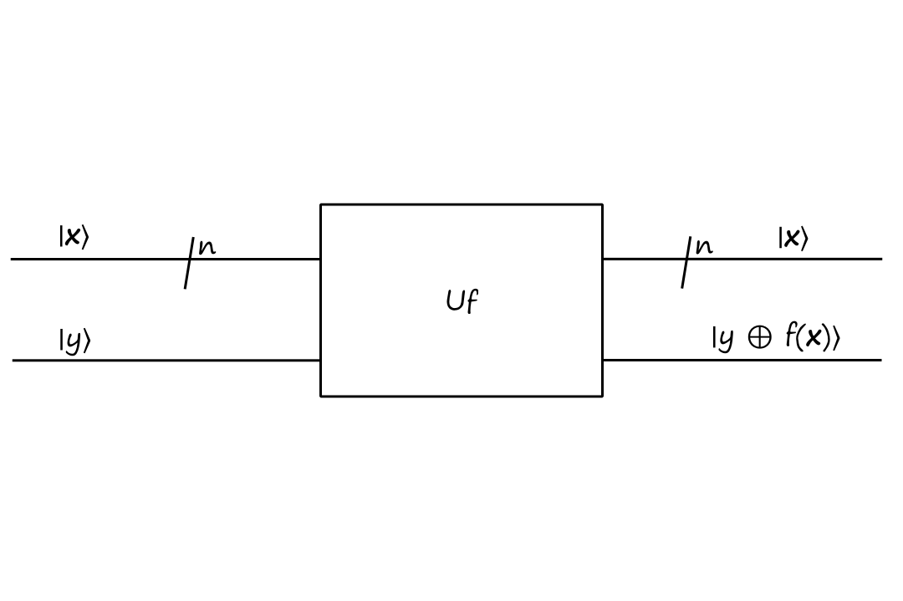
The `/n` means that there are `n` qubits (it's kinda like saying there are `n` of these lines). The bolded `bb x` is a binary string, so `|bbx:)=``|x_0x_1...x_(n-1):)`. For example,
`|bb0:)=``|00...0:)=``{:[00000000],[00000001],[00000010],[vdots],[11111110],[11111111]:}[[1],[0],[0],[vdots],[0],[0]]`
With this oracle, let's jump straight into the circuit for the Deutsch-Josza algorithm:
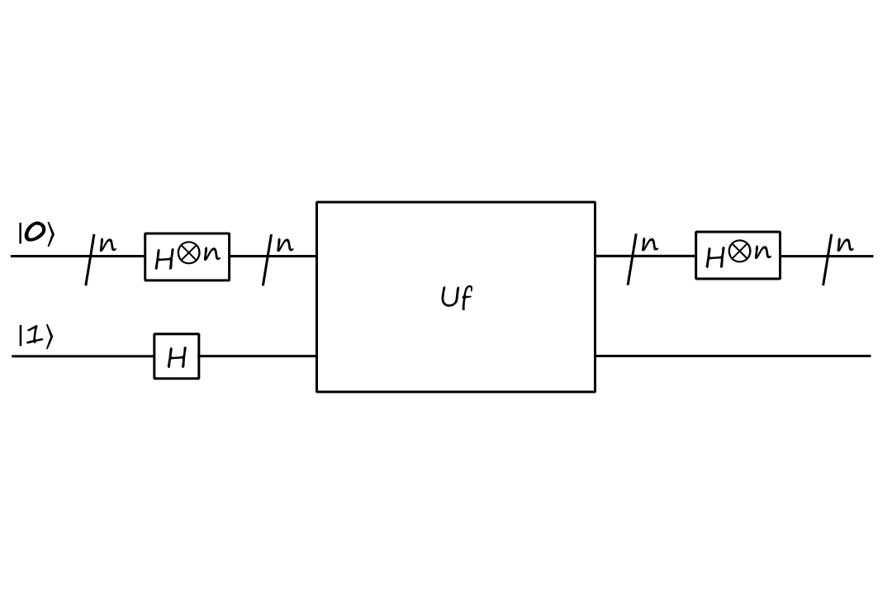
`(H^(otimesn)otimesI)U_f``(H^(otimesn)otimesH)``|bb0,1:)`
`H^(otimesn)` is the tensor product of `n` Hadamard matrices. For example, `H^(otimes3)=HotimesHotimesH`.
`(H^(otimesn)otimesI)U_f``(H^(otimesn)otimesH)``|bb0,1:)`
`=(H^(otimesn)otimesI)U_f``(``H^(otimesn)``|bb0:)``otimesH``|1:))`
It turns out that `H^(otimesn)``|bb0:)` simplifies to a nice expression. We can derive it by looking at the pattern for different values of `n`, starting with `n=2`:
`H^(otimes2)``|bb0:)=H``|0:)H``|0:)`
`=1/sqrt(2)(``|0:)+``|1:))``1/sqrt(2)(``|0:)+``|1:))`
`=1/sqrt(2^2)``(``|00:)+``|01:)+``|10:)+``|11:))`
`=1/sqrt(2^2)sum_(bbx in{0,1}^2)``|bbx:)`
Now for `n=3`:
`H^(otimes3)``|bb0:)=H``|0:)H``|0:)H``|0:)`
`=1/sqrt(2)(``|0:)+``|1:))``1/sqrt(2)(``|0:)+``|1:))``1/sqrt(2)(``|0:)+``|1:))`
`=1/sqrt(2^3)``(``|000:)+``|001:)+``|010:)+``|011:)+``|100:)+``|101:)+``|110:)+``|111:))`
`=1/sqrt(2^3)sum_(bbx in{0,1}^3)``|bbx:)`
So the general pattern is
`H^(otimesn)``|bb0:)=``1/sqrt(2^n)sum_(bbx in{0,1}^n)``|bbx:)`
Going back to our analysis,
`(H^(otimesn)otimesI)U_f``(``H^(otimesn)``|bb0:)``otimesH``|1:))`
`=(H^(otimesn)otimesI)U_f``(``1/sqrt(2^n)sum_(bbx in{0,1}^n)``|bbx:)otimesH``|1:))`
`=(H^(otimesn)otimesI)1/sqrt(2^n)sum_(bbx in{0,1}^n)U_f``|bbx:)H``|1:)`
Using the identity we derived previously for `U_f``|x:)H``|1:)`, we get
`=(H^(otimesn)otimesI)1/sqrt(2^n)sum_(bbx in{0,1}^n)(-1)^(f(bbx))``|bbx:)H``|1:)`
`=1/sqrt(2^n)sum_(bbx in{0,1}^n)(-1)^(f(bbx))H^(otimesn)``|bbx:)otimes(IotimesH``|1:))`
`=1/sqrt(2^n)sum_(bbx in{0,1}^n)(-1)^(f(bbx))H^(otimesn)``|bbx:)H``|1:)`
For simplifying `H^(otimesn)``|bbx:)`, we can't use `H^(otimesn)``|bb0:)=``1/sqrt(2^n)sum_(bbx in{0,1}^2)``|bbx:)` since this is only for the state with all `0`s.
It turns out that for any `x_i`,
`H``|x_i:)=``1/sqrt(2)``(``|0:)+``(-1)^(x_i)``|1:))`
If `x_i=0`, then we get `H``|0:)=``1/sqrt(2)``(``|0:)+``(-1)^(0)``|1:))=``1/sqrt(2)``(``|0:)+``|1:))`
If `x_i=1`, then we get `H``|1:)=``1/sqrt(2)``(``|0:)+``(-1)^(1)``|1:))=``1/sqrt(2)``(``|0:)-``|1:))`
Let's see if there's some sort of pattern we can derive. We'll look at `n=3`.
`H^(otimes3)``|bbx:)=H``|x_0:)H``|x_1:)H``|x_2:)`
`=1/sqrt(2)``(``|0:)+``(-1)^(x_0)``|1:))``1/sqrt(2)``(``|0:)+``(-1)^(x_1)``|1:))``1/sqrt(2)``(``|0:)+``(-1)^(x_2)``|1:))`
Taking the tensor product, we get
`=1/sqrt(2^3)``(``|000:)+``(-1)^(x_2)``|001:)+``(-1)^(x_1)``|010:)+``(-1)^(x_1)(-1)^(x_2)``|011:)`
`+(-1)^(x_0)``|100:)+``(-1)^(x_0)(-1)^(x_2)``|101:)+``(-1)^(x_0)(-1)^(x_1)``|110:)+(-1)^(x_0)(-1)^(x_1)(-1)^(x_2)``|111:)`
Simplifying the exponents,
`=1/sqrt(2^3)``(``|000:)+``(-1)^(x_2)``|001:)+``(-1)^(x_1)``|010:)+``(-1)^(x_1+x_2)``|011:)`
`+(-1)^(x_0)``|100:)+``(-1)^(x_0+x_2)``|101:)+``(-1)^(x_0+x_1)``|110:)+``(-1)^(x_0+x_1+x_2)``|111:)`
There's actually an interesting pattern here. Notice that for each term with a `(-1)^(x_i)`, there's a `1` in the `i^(th)` spot. Using this, we can rewrite the exponents as inner products:
`=1/sqrt(2^3)``(``|000:)+``(-1)^((:bbx,001:))``|001:)+``(-1)^((:bbx,010:))``|010:)+``(-1)^((:bbx,011:))``|011:)`
`+(-1)^((:bbx,100:))``|100:)+``(-1)^((:bbx,101:))``|101:)+``(-1)^((:bbx,110:))``|110:)+``(-1)^((:bbx,111:))``|111:)`
Looking at one of the terms as an example,
`(:bb x,101:)=x_0*1+x_1*0+x_2*1=x_0+x_2`
Which we can then rewrite compactly as
`=1/sqrt(2^3)sum_(bbz in {0,1}^3)(-1)^((:bbx,bbz:))``|bbz:)`
For general `n` then, we have
`H^(otimesn)``|bbx:)=``1/sqrt(2^n)sum_(bbz in {0,1}^n)(-1)^((:bbx,bbz:))``|bbz:)`
Now that we have a simplified expression for `H^(otimesn)``|bbx:)`, we can continue our analysis of the algorithm.
`1/sqrt(2^n)sum_(bbx in{0,1}^n)(-1)^(f(bbx))H^(otimesn)``|bbx:)H``|1:)`
`=1/sqrt(2^n)``(``sum_(bbx in{0,1}^n)(-1)^(f(bbx))H^(otimesn)``|bbx:))H``|1:)`
`=1/sqrt(2^n)``(``sum_(bbx in{0,1}^n)(-1)^(f(bbx))1/sqrt(2^n)sum_(bbz in {0,1}^n)(-1)^((:bbx,bbz:))``|bbz:))H``|1:)`
`=``(``sum_(bbx in{0,1}^n)1/sqrt(2^n)sum_(bbz in {0,1}^n)1/sqrt(2^n)(-1)^(f(bbx))(-1)^((:bbx,bbz:))``|bbz:))H``|1:)`
`=``(``sum_(bbx in{0,1}^n)sum_(bbz in {0,1}^n)1/(2^n)(-1)^(f(bbx)+(:bbx,bbz:))``|bbz:))H``|1:)`
Ignoring all the "fluff", the current state is basically `|bbz:)otimesH``|1:)`.
It would be helpful to isolate the `f(bbx)`, and we can do this by setting `bbz=bb0`.
`(``sum_(bbx in{0,1}^n)1/(2^n)(-1)^(f(bbx)+(:bbx,bb0:))``|bb0:))H``|1:)`
`=``(``sum_(bbx in{0,1}^n)1/(2^n)(-1)^(f(bbx)+bb0)``|bb0:))H``|1:)`
`=``(``sum_(bbx in{0,1}^n)1/(2^n)(-1)^(f(bbx))``|bb0:))H``|1:)`
This is the probability that the top `n` qubits collapse to state `|bb0:)`. And the probability is dependent on `f(bbx)`. If `f(bbx)` is constant at `0`, we have
`(``sum_(bbx in{0,1}^n)1/(2^n)(-1)^(0)``|bb0:))H``|1:)`
`=(``sum_(bbx in{0,1}^n)1/(2^n)``|bb0:))H``|1:)`
Since there are `2^n` strings in `{0,1}^n`, the summation results in
`=(``2^(n)/(2^n)``|bb0:))H``|1:)`
`=1``|bb0:)H``|1:)`
If `f` is constant at `1`, we have
`(``sum_(bbx in{0,1}^n)1/(2^n)(-1)^(1)``|bb0:))H``|1:)`
`=(``sum_(bbx in{0,1}^n)-1/(2^n)``|bb0:))H``|1:)`
`=(``-2^(n)/(2^n)``|bb0:))H``|1:)`
`=-1``|bb0:)H``|1:)`
So if `f` is constant, the probability that the top `n` qubits collapse to state `|bb0:)` is `1`.
If `f` is balanced, then half of the inputs will result in `f(bbx)=0` and the other half will result in `f(bbx)=1`.
`(``sum_(bbx in{0,1}^n)1/(2^n)(-1)^(f(bbx))``|bb0:))H``|1:)`
`=(1/2^n(-1)^0+1/2^n(-1)^1+1/2^n(-1)^0+...+1/2^n(-1)^1)``|bb0:)H``|1:)`
Everything will cancel out with each other and we'll end up with
`=0``|bb0:)H``|1:)`
So if `f` is balanced, the probability that the top `n` qubits collapse to state `|bb0:)` is `0`.
How do we apply these results for the algorithm? If we measure the top `n` qubits and they're in the state `|bb0:)`, then `f` is constant. If they're in any state other than `|bb0:)`, then the function is balanced.
`|0:)oplusf(a)-``|1:)oplus``f(a)=(-1)^(f(a))``(``|0:)-``|1:))`
`U_f``|x:)H``|1:)=``(-1)^(f(x))``|x:)H``|1:)`
`H^(otimesn)``|bb0:)=``1/sqrt(2^n)sum_(bbx in{0,1}^n)``|bbx:)`
`H^(otimesn)``|bbx:)=``1/sqrt(2^n)sum_(bbz in {0,1}^n)(-1)^((:bbx,bbz:))``|bbz:)`
Moving away from constant and balanced functions, we'll now look at something different.
Let's consider a function `f:{0,1}^n mapsto {0,1}^n`. Suppose there exists a secret binary string `bbc=c_0c_1...c_(n-1)` such that for all strings `bbx,bby in {0,1}^n`, we have `f(bbx)=f(bby)` if and only if `bby=bbxoplusbbc`. The goal of Simon's algorithm is to find out what `bbc` is.
Well, okay, what does this problem even mean in the first place? Let's look at an example with `n=2`.
Suppose we're given these values in the table below. The rule is that all `bbx` entries that have the same `f(bbx)` values are related to each other.
| `bbx` | `f(bbx)` |
|---|---|
| `00` | `00` |
| `01` | `11` |
| `10` | `00` |
| `11` | `11` |
So `00` and `10` are related to each other, and `01` and `11` are related to each other. The way they're related is that `00oplusbbc=10` and `01oplusbbc=11`. The goal is to find out what `bbc` is.
In some problem instances, it may be possible that `bbc=0^n`. In these cases, none of the `bbx` entries will be related to each other, i.e., all the `bbx` entries will have unique `f(bbx)` values.
This is because `x_0x_1...x_(n-1)oplus00...0=x_0x_1...x_(n-1)`, i.e., it is impossible for a binary string to be `oplus` with `0^n` to get a different binary string.
In these cases, `f` would be a one-to-one function. In the other cases where `bbc!=0^n`, `f` would be a two-to-one function.
The oracle we'll be using for Simon's algorithm is
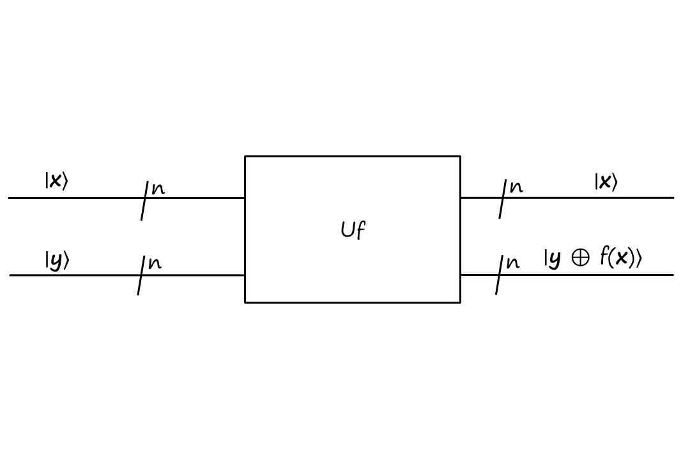
And the circuit for Simon's algorithm is
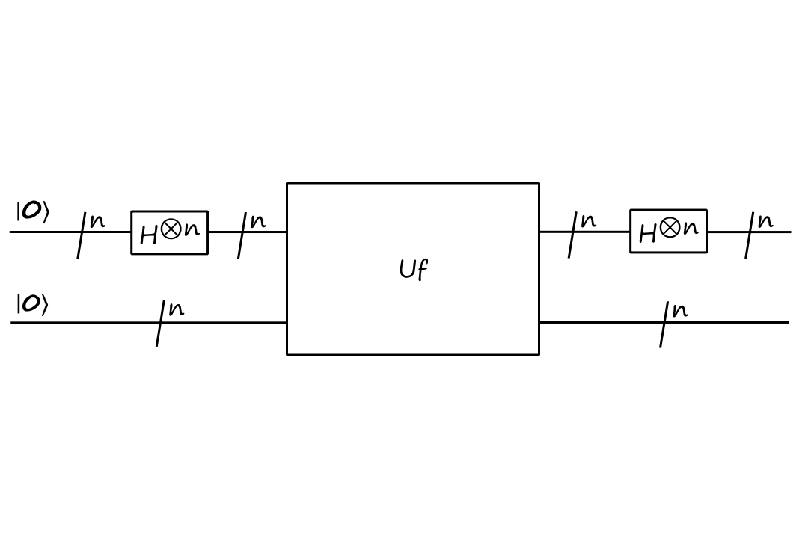
Using the last two updated identities really makes things a lot easier here.
`(H^(otimesn)otimesI)U_f``(H^(otimesn)otimesI)``|bb0bb0:)`
`=(H^(otimesn)otimesI)U_f``(``H^(otimesn)``|bb0:)``|bb0:))`
`=(H^(otimesn)otimesI)U_f``(``1/sqrt(2^n)sum_(bbx in {0,1}^n)``|bbx:)``|bb0:))`
`=(H^(otimesn)otimesI)``1/sqrt(2^n)sum_(bbx in {0,1}^n)``|bbx:)``|bb0oplusf(bbx):)`
`=(H^(otimesn)otimesI)``1/sqrt(2^n)sum_(bbx in {0,1}^n)``|bbx:)``|f(bbx):)`
`=1/sqrt(2^n)sum_(bbx in {0,1}^n)H^(otimesn)``|bbx:)``|f(bbx):)`
`=1/sqrt(2^n)sum_(bbx in {0,1}^n)1/sqrt(2^n)sum_(bbz in {0,1}^n)(-1)^((:bbx,bbz:))``|bbz:)``|f(bbx):)`
We're given that `f(bbx)=f(bbxoplusbbc)`. This means that the coefficient for `|bbz:)``|f(bbx):)` and the coefficient for `|bbz:)``|f(bbxoplusbbc):)` should be the same.
`(-1)^((:bbx,bbz:))=(-1)^((:bbxoplusbbc,bbz:))`
`(-1)^((:bbx,bbz:))=(-1)^((:bbx,bbz:)oplus(:bbc,bbz:))`
From this, we can see that the only way that the coefficients will be the same is if `(:bbc,bbz:)=0`. This means that when we measure the top qubits, the only results that are possible are the binary strings such that the inner product of that string with `bbc` is `0`.
Let's see Simon's algorithm in action with our `n=2` example.
| `bbx` | `f(bbx)` |
|---|---|
| `00` | `00` |
| `01` | `11` |
| `10` | `00` |
| `11` | `11` |
`(H^(otimes2)otimesI)U_f``(H^(otimes2)otimesI)``|bb0bb0:)`
`=(H^(otimes2)otimesI)U_f``(``H^(otimes2)``|bb0:)``|bb0:))`
`=(H^(otimes2)otimesI)U_f``(``1/sqrt(2^2)sum_(bbx in {0,1}^2)``|bbx:)``|bb0:))`
`=(H^(otimes2)otimesI)U_f``(``1/sqrt(4)``(``|00:)otimes``|00:)+``|01:)otimes``|00:)+``|10:)otimes``|00:)+``|11:)otimes``|00:)))`
`=(H^(otimes2)otimesI)``1/sqrt(4)``(``|00:)otimes``|00oplusf(00):)+``|01:)otimes``|00oplusf(01):)+``|10:)otimes``|00oplusf(10):)+``|11:)otimes``|00oplusf(11):))`
`=(H^(otimes2)otimesI)``1/sqrt(4)``(``|00:)otimes``|f(00):)+``|01:)otimes``|f(01):)+``|10:)otimes``|f(10):)+``|11:)otimes``|f(11):))`
`=(H^(otimes2)otimesI)``1/sqrt(4)``(``|00:)otimes``|00:)+``|01:)otimes``|11:)+``|10:)otimes``|00:)+``|11:)otimes``|11:))`
`=1/sqrt(4)``(``H^(otimes2)``|00:)otimesI``|00:)+``H^(otimes2)``|01:)otimesI``|11:)+``H^(otimes2)``|10:)otimesI``|00:)+``H^(otimes2)``|11:)otimesI``|11:))`
`=1/sqrt(4)``(``1/sqrt(2^2)sum_(bbz in {0,1}^2}(-1)^((:00,bbz:))``|bbz:)otimes``|00:)`
`+1/sqrt(2^2)sum_(bbz in {0,1}^2}(-1)^((:01,bbz:))``|bbz:)otimes``|11:)`
`+1/sqrt(2^2)sum_(bbz in {0,1}^2}(-1)^((:10,bbz:))``|bbz:)otimes``|00:)`
`+1/sqrt(2^2)sum_(bbz in {0,1}^2}(-1)^((:11,bbz:))``|bbz:)otimes``|11:))`
`=1/2``(``1/2``(``(-1)^((:00,00:))``|00:)otimes``|00:)+``(-1)^((:00,01:))``|01:)otimes``|00:)+``(-1)^((:00,10:))``|10:)otimes``|00:)+``(-1)^((:00,11:))``|11:)otimes``|00:))`
`+1/2``(``(-1)^((:01,00:))``|00:)otimes``|11:)+``(-1)^((:01,01:))``|01:)otimes``|11:)+``(-1)^((:01,10:))``|10:)otimes``|11:)+``(-1)^((:01,11:))``|11:)otimes``|11:))`
`+1/2``(``(-1)^((:10,00:))``|00:)otimes``|00:)+``(-1)^((:10,01:))``|01:)otimes``|00:)+``(-1)^((:10,10:))``|10:)otimes``|00:)+``(-1)^((:10,11:))``|11:)otimes``|00:))`
`+1/2``(``(-1)^((:11,00:))``|00:)otimes``|11:)+``(-1)^((:11,01:))``|01:)otimes``|11:)+``(-1)^((:11,10:))``|10:)otimes``|11:)+``(-1)^((:11,11:))``|11:)otimes``|11:)))`
`=1/2``(``1/2``(``(+1)``|00:)otimes``|00:)+``(+1)``|01:)otimes``|00:)+``(+1)``|10:)otimes``|00:)+``(+1)``|11:)otimes``|00:))`
`+1/2``(``(+1)``|00:)otimes``|11:)+``(-1)``|01:)otimes``|11:)+``(+1)``|10:)otimes``|11:)+``(-1)``|11:)otimes``|11:))`
`+1/2``(``(+1)``|00:)otimes``|00:)+``(+1)``|01:)otimes``|00:)+``(-1)``|10:)otimes``|00:)+``(-1)``|11:)otimes``|00:))`
`+1/2``(``(+1)``|00:)otimes``|11:)+``(-1)``|01:)otimes``|11:)+``(-1)``|10:)otimes``|11:)+``(+1)``|11:)otimes``|11:)))`
`=1/8``(``(+2)``|00:)otimes``|00:)+``(+2)``|01:)otimes``|00:)+``(+2)``|00:)otimes``|11:)+``(-2)``|01:)otimes``|11:))`
`=1/4``(``|00:)otimes``|00:)+``|01:)otimes``|00:)+``|00:)otimes``|11:)+``|01:)otimes``|11:))`
At this point, if we were to measure the top 2 qubits, there is a `50%` chance that they'll collapse to `|00:)` or `|01:)`. (There's a `2/4` chance that the whole system collapses to `|00:)otimes``|00:)` or `|00:)otimes``|11:)`, and a `2/4` chance that the whole system collapses to `|01:)otimes``|00:)` or `|01:)otimes``|11:))`.)
Let's arbitrarily say that this time it collapses to `|00:)`. From analyzing the algorithm, we know that `(:00,bbc:)=0`. If we let `bbc=c_1c_2`, then we have
`(:00,bbc:)=(:00,c_1c_2:)=0`
`0*c_1+0*c_2=0`
There isn't enough information to determine what the values of `c_1,c_2` are (since they could both be `0` or `1`). So we need to run the algorithm again to (hopefully) get a different equation after measurement.
Let's say that on the second run of the algorithm, the top 2 qubits collapse to `|01:)`. Then we have
`(:01,bbc:)=(:01,c_1c_2:)=0`
`0*c_1+1*c_2=0`
Now we know for sure that `c_2=0`. It's not obvious from looking at these two equations alone, but we do, in fact, also know that `c_1!=0`. This comes from the note earlier in this section about one-to-one and two-to-one functions. This example is dealing with a two-to-one function, so `bbc!=00 implies c_1=1`.
So we have figured out that the secret binary string `bbc` is `10`. And we can confirm this.
Recall that `00` and `10` were related to each other by `00oplusbbc=10` since `f(00)=f(10)=00`.
`00oplus10=10`
Recall that `01` and `11` were related to each other by `01oplusbbc=11` since `f(01)=f(11)=11`.
`01oplus10=11`
If we used a classical computer to solve this problem, it would take `2^n/2+1=2^(n-1)+1` function evaluations in the worst case. The worst case being that we go through half of the strings before finding a pair of related strings.
With this algorithm, we only need to run the algorithm `n` times to solve the problem. This is because one run of the algorithm gives us one equation, and we need `n` equations to solve a system of equations with `n` variables.
Grover's algorithm solves the problem of finding one particular element out of a bunch of elements. Suppose we have a function `f:{0,1}^n mapsto {0,1}`. For exactly one of the inputs `bbx_0`, `f(bbx_0)` will return `1`. For all the other inputs, `f` will return `0`. The goal is to find out what that `bbx_0` is.
We'll use the same oracle as the one for Deutsch-Josza.
In the context of this problem, this oracle has the effect of "picking out" the specific binary string `bbx_0` for which `f(bbx_0)=1`. For example, suppose `f(01)=1` and `f(00)=f(10)=f(11)=0`.
Looking at `f(00)=f(10)=f(11)=0` first, `U_f` returns the same output as the input.
`U_f``|00,0:)=``|00,0oplusf(01):)=``|00,0oplus0:)=``|00,0:)`
`U_f``|00,1:)=``|00,1oplusf(01):)=``|00,1oplus0:)=``|00,1:)`
`U_f``|10,0:)=``|10,0oplusf(01):)=``|10,0oplus0:)=``|10,0:)`
`U_f``|10,1:)=``|10,1oplusf(01):)=``|10,1oplus0:)=``|10,1:)`
`U_f``|11,0:)=``|11,0oplusf(01):)=``|11,0oplus0:)=``|11,0:)`
`U_f``|11,1:)=``|11,1oplusf(01):)=``|11,1oplus0:)=``|11,1:)`
But look at what happens for `f(01)=1`.
`U_f``|01,0:)=``|01,0oplusf(00):)=``|01,0oplus1:)=``|01,1:)`
`U_f``|01,1:)=``|01,1oplusf(00):)=``|01,1oplus1:)=``|01,0:)`
`U_f` flips the bottom qubit.
For this section, we'll use `bbx_0=01`.
The main idea behind Grover's algorithm is that it progressively increases the chances of the qubits measuring to the correct binary string.
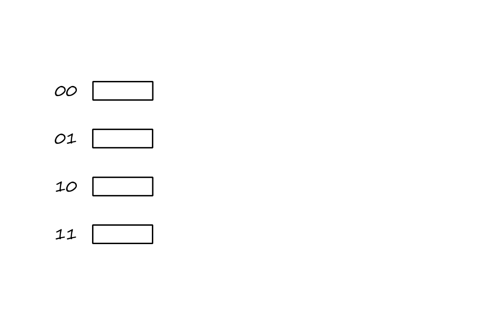
It does this by using two tricks: phase inversion and inversion about the mean.
In order to boost the probability of the correct binary string `bbx_0`, we need to distinguish it from the others. We'll use this circuit to do so:
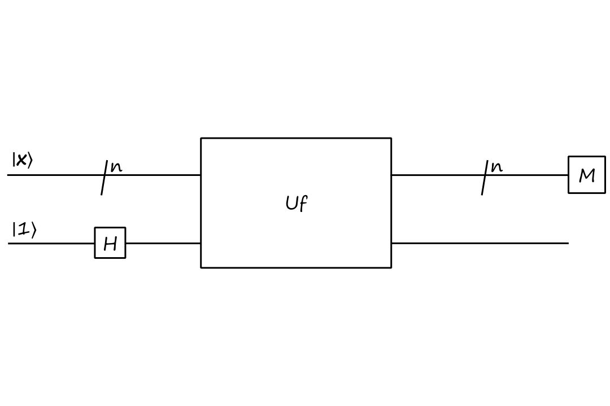
This is similar to the circuit in attempt 2 for Deutsch's algorithm, just with `n` qubits and the measurement operator on the top qubits. The result of the circuit is still the same though:
`U_f``(IotimesH)(``|bbx:)otimes``|1:))`
`=(-1)^(f(bbx))``|bbx:)``1/sqrt(2)(``|0:)-``|1:))`
`=-1``|bbx:)H``|1:)` if `bbx=bbx_0`
and `+1``|bbx:)H``|1:)` if `bbx!=bbx_0`
This essentially just changes the sign of the `|bbx_0:)` state. For example, if `|bbx:)` starts in an equal superposition of all states
`{:[00],[01],[10],[11]:}[[1/2],[1/2],[1/2],[1/2]]`
then phase inversion will transform `|bbx:)` into
`{:[00],[01],[10],[11]:}[[1/2],[-1/2],[1/2],[1/2]]`
While changing the sign does distinguish the `|bbx_0:)` state from the other states, the probability of the `|bbx_0:)` state is still the same as the others (recall that the probability is calculated using the norm squared). We need a way to change the probabilities.
This technique is a not a quantum-specific operation, so we'll first see how it works with just regular numbers.
Suppose we have the numbers `53`, `38`, `17`, `23`, and `79`. Their average is `a=42`. We can plot the numbers and their distance away from their average like this
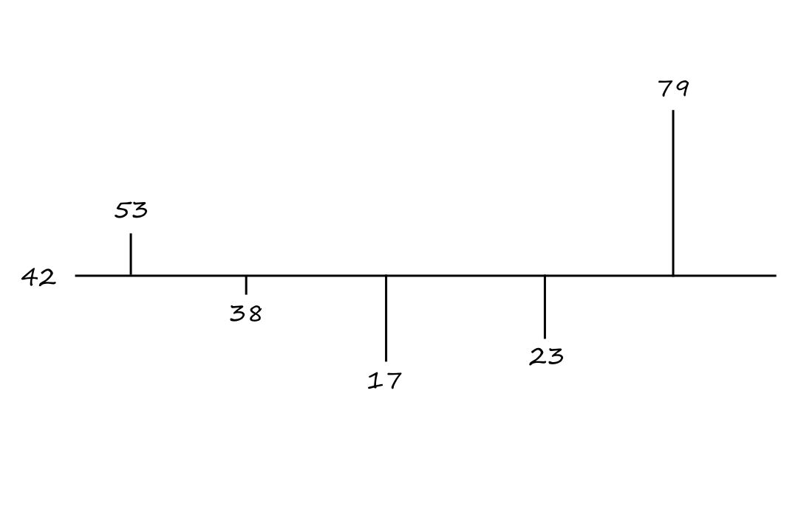
To invert these numbers around the average is to move each number in the opposite direction from the average. For example, `53` is `11` units up from the average, so `53` inverted about the mean would be `11` units down from the mean, which is `31`.
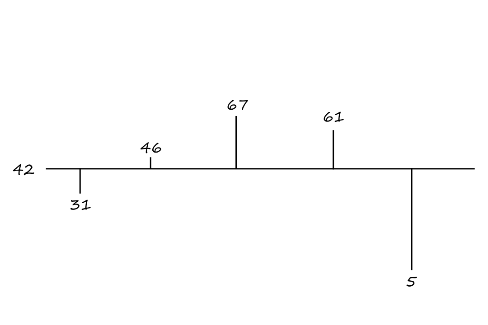
This effectively "rotates" the numbers about the mean.
The general equation for inversion about the mean is
`v'=a+(a-v)`
`=-v+2a`
where `v` is each element and `a` is the average of all `v` elements.
If we want to apply this technique to our quantum states, we turn everything into matrices. The matrix that computes the average of `5` numbers is
`A=[[1/5,1/5,1/5,1/5,1/5],[1/5,1/5,1/5,1/5,1/5],[1/5,1/5,1/5,1/5,1/5],[1/5,1/5,1/5,1/5,1/5],[1/5,1/5,1/5,1/5,1/5]]`
We can confirm this with our sequence of numbers:
`AV=[[1/5,1/5,1/5,1/5,1/5],[1/5,1/5,1/5,1/5,1/5],[1/5,1/5,1/5,1/5,1/5],[1/5,1/5,1/5,1/5,1/5],[1/5,1/5,1/5,1/5,1/5]][[53],[38],[17],[23],[79]]=[[42],[42],[42],[42],[42]]`
With the average represented as `AV`, the general equation for inversion about the mean in matrix form is
`V'=-V+2AV`
`=(-I+2A)V`
For our example,
`(-I+2A)=[[-1+2/5,2/5,2/5,2/5,2/5],[2/5,-1+2/5,2/5,2/5,2/5],[2/5,2/5,-1+2/5,2/5,2/5],[2/5,2/5,2/5,-1+2/5,2/5],[2/5,2/5,2/5,2/5,-1+2/5]]`
And we can confirm that this matrix inverts the numbers about the mean:
`(-I+2A)V=[[-1+2/5,2/5,2/5,2/5,2/5],[2/5,-1+2/5,2/5,2/5,2/5],[2/5,2/5,-1+2/5,2/5,2/5],[2/5,2/5,2/5,-1+2/5,2/5],[2/5,2/5,2/5,2/5,-1+2/5]][[53],[38],[17],[23],[79]]=[[31],[46],[67],[61],[5]]`
Combining phase inversion and inversion about the mean, we can create the circuit for Grover's algorithm:
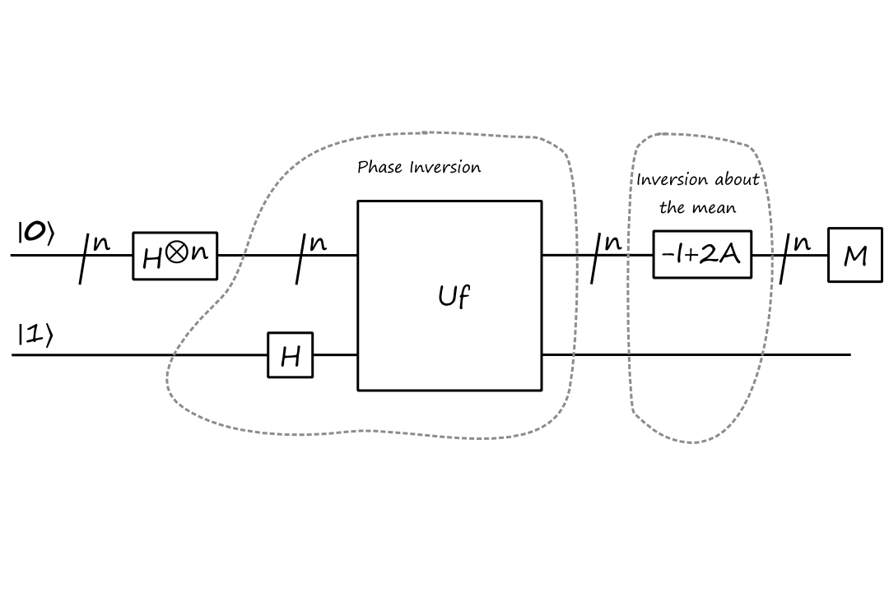
Let's see how this works with our `bbx_0=01` example. We start with
`{:[00],[01],[10],[11]:}[[0],[0],[0],[0]]`
After applying the Hadamard gates, we get
`{:[00],[01],[10],[11]:}[[1/sqrt(4)],[1/sqrt(4)],[1/sqrt(4)],[1/sqrt(4)]]`
After applying phase inversion, we get
`{:[00],[01],[10],[11]:}[[1/sqrt(4)],[-1/sqrt(4)],[1/sqrt(4)],[1/sqrt(4)]]`
To prepare for inversion about the mean, we calculate the average, which is
`a=(color(red)(1/sqrt(4))+color(blue)(-1/sqrt(4))+color(red)(1/sqrt(4))+color(red)(1/sqrt(4)))1/4=1/(2sqrt(4))`
and the inversion about the mean, which is
`-v+2a=-color(red)(1/sqrt(4))+2(1/(2sqrt(4)))=0`
`-v+2a=-(color(blue)(-1/sqrt(4)))+2(1/(2sqrt(4)))=2/sqrt(4)=2/2=1`
After applying inversion about the mean, we get
`{:[00],[01],[10],[11]:}[[0],[1],[0],[0]]`
In this case, we only needed to run Grover's algorithm once to get the answer. But in general, we need to perform phase inversion and inversion about the mean `floor(pi/4sqrt(2^n))` times.
This means that Grover's algorithm is `O(sqrt(n))`.
There was one concept I struggled to understand when first learning about Grover's algorithm, and I think it's a common misconception. How does Grover's algorithm know which state to boost the probability of? It seems like it knows (or needs to know) what the correct binary string is ahead of time, which defeats the purpose of needing this algorithm in the first place.
The answer lies in the construction of the oracle function `U_f`.
For all of these problems, we don't know the specific details of how `f` works. We know that `f` returns different outputs for certain binary strings, but we don't know which binary strings result in which outputs.
However, there is a way to "distinguish" the binary strings by what `f` would output for them. We do this by constructing our own function `U_f` where the output of `U_f` depends on the value of `f`.
The oracle takes in a superposition of states as its input. This means that it is acting on all possible input binary strings at once. The oracle also returns a superposition of states as its output, but some of the states are modified based on the output of `f` for that state.
Let's run through part of the analysis of Grover's algorithm with `n=2` to see this concretely. We have
`U_f``(``H^(otimes2)``|bb0:)``otimesH``|1:))`
`=U_f``(``1/sqrt(2^2)sum_(bbx in{0,1}^2)``|bbx:)otimesH``|1:))`
`=U_f``(``1/sqrt(2^2)(``|00:)+``|01:)+``|10:)+``|11:))``otimesH``|1:))`
This is what it looks like (for Grover's algorithm) when I say that the oracle takes in a superposition of states as its input.
Now let's apply `U_f` to see the output.
`U_f``(``1/sqrt(2^2)sum_(bbx in{0,1}^2)``|bbx:)otimesH``|1:))`
`=1/sqrt(2^2)sum_(bbx in{0,1}^2)U_f``|bbx:)H``|1:)`
`=1/2sum_(bbx in {0,1}^2)(-1)^(f(bbx))``|bbx:)H``|1:)`
`=1/2``(``(-1)^(f(00))``|00:)H``|1:)+``(-1)^(f(01))``|01:)H``|1:)+``(-1)^(f(10))``|10:)H``|1:)+``(-1)^(f(11))``|11:)H``|1:))`
This is what it looks like (for Grover's algorithm) when I say that the oracle returns a superposition of states as its output. Furthermore, we can see how some of the states are "marked" by `f`. If we're given an `f` that returns `1` for `01` and `0` for everything else, then the state `|01:)` will be the only negative state.
`1/2``(``(-1)^0``|00:)H``|1:)+``(-1)^1``|01:)H``|1:)+``(-1)^0``|10:)H``|1:)+``(-1)^0``|11:)H``|1:))`
`=1/2``(``|00:)H``|1:)+``(-1)``|01:)H``|1:)+``|10:)H``|1:)+``|11:)H``|1:))`
So Grover's algorithm doesn't need to know ahead of time what the correct binary string is. It's just working with all possible states at once and modifying the appropriate state(s) according to the behavior of `f`.
Shor's algorithm is used to find the factors of a number `N`. The algorithm starts by picking a random number, let's call it `a`. If we're lucky, `a` divides `N`, in which case the algorithm is done. If it doesn't divide `N`, but it shares a common factor with `N`, then the algorithm is also done.
How do we know if `a` shares a common factor with `N` if we don't know the factors of `N`? We can use Euclid's algorithm to calcluate the greatest common divisor of `a` and `N`.
So if `a` doesn't divide `N` and it also doesn't share any factors with `N` (i.e., `a` is co-prime to `N`), then we can start using some number theory magic to transform `a` into a better guess. It turns out that
`a^p=1 text( Mod ) N`
meaning that if we multiply `a` by itself enough times, we'll end up with a number that can be divided by `N+1`.
`a=3,N=5:`
`3^4=81=80+1=(5*16)+1=1 text( Mod ) 5`
If we take `3` and multiply it by itself `4` times, we'll end up with a number (`81`) that can be divided by `5+1`.
`a=4,N=7:`
`4^3=64=63+1=(7*9)+1=1 text( Mod ) 7`
If we take `4` and multiply it by itself `3` times, we'll end up with a number (`64`) that can be divided by `7+1`.
With some rearranging, we get
`a^p-1=0 text( Mod ) N`
`(a^(p/2)+1)(a^(p/2)-1)=0 text( Mod ) N`
What this is saying is that we can multiply two numbers `(a^(p/2)+1)` and `(a^(p/2)-1)` to get a multiple of `N`. Because of number theory, these two numbers should share a common factor with `N`. So the factors of `N` are
`GCD(a^(p/2)+1,N)` and `GCD(a^(p/2)-1,N)`
But how do we find `p`? Unfortunately, there aren't any tricks for this; we just have to keep trying different values of `p`. We can, however, speed things up by trying a superposition of values for `p`.
First, we can reframe our situation as
`f_(a,N)(x)=a^x text( Mod ) N`
where the problem we're trying to solve is finding the smallest non-zero value of `p` such that
`f_(a,N)(p)=a^p text( Mod ) N=1`
`a=2,N=15:`
| `x` | `0` | `1` | `2` | `3` | `4` | `5` | `6` | `7` | `8` |
| `f_(2,15)(x)` | `1` | `2` | `4` | `8` | `1` | `2` | `4` | `8` | `1` |
`a=4,N=15:`
| `x` | `0` | `1` | `2` | `3` | `4` | `5` | `6` | `7` | `8` |
| `f_(4,15)(x)` | `1` | `4` | `1` | `4` | `1` | `4` | `1` | `4` | `1` |
Notice that there is a pattern that repeats. The length of the pattern is referred to as the period of the function. Also notice that the length of the pattern is equal to the smallest non-zero value of `x` for which `f(x)=1`. This means the problem we're trying to solve essentially boils down to finding the period of `f`.
The quantum circuit that implements `f_(a,N)` (a.k.a. the oracle) is
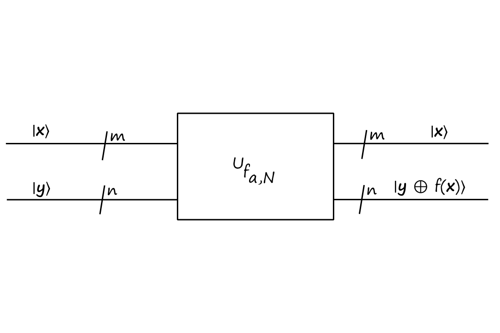
where `n=log_2N` and `m=2n`.
The output of `f_(a,N)` will always be less than `N`. And we need `log_2N` bits to store `N`. Therefore, we can use `n=log_2N` for the number of output bits.
And the whole circuit for Shor's algorithm is
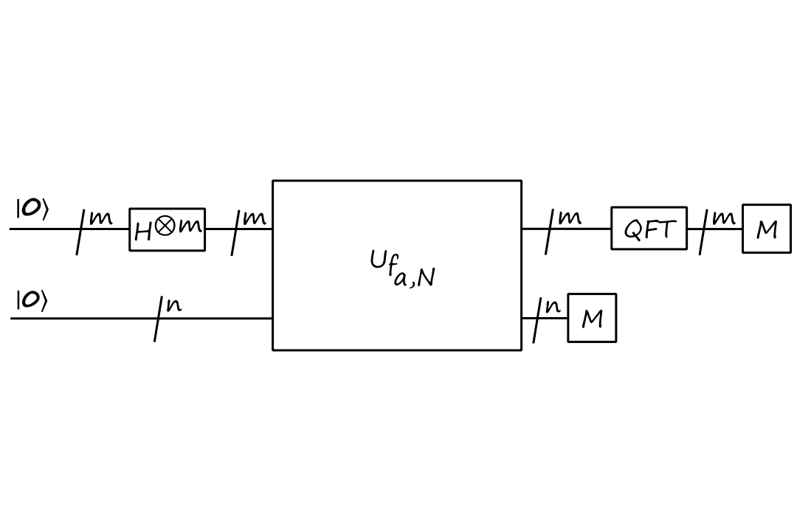
`QFT` is a quantum Fourier transform.
We start with `|bb0_m,bb0_n:)` and apply the Hadamards to get
`1/sqrt(2^m)sum_(bbx in {0,1}^m)``|bbx,bb0_n:)`
Then the output of `U_(f_a,N)` is
`1/sqrt(2^m)sum_(bbx in {0,1}^m)``|bbx,f_(a,N)(bbx):)`
`=1/sqrt(2^m)sum_(bbx in {0,1}^m)``|bbx,a^(bbx) text( Mod ) N:)`
For `a=2,N=15`, we will have
`1/sqrt(2^8)sum_(bbx in {0,1}^8)``|bbx,a^(bbx) text( Mod ) 15:)`
`=1/sqrt(256)``(``|0,1:)+``|1,2:)+``|2,4:)+``|3,8:)+``|4,1:)+...+``|255,8:))`
Now, if we measure the bottom qubits, we'll get a random value of
`a^ztext( Mod )N`
for some `z`. This means after measuring the bottom qubits, we will have a superposition of states where the bottom qubits are in the state `|a^ztext( Mod )N:)`. In fact, there are `floor(2^m/p)` of these states.
`1/floor(2^m/p)sum_(a^z=a^ztext( Mod )N)``|bbx,a^ztext( Mod )N:)`
For `a=2,N=15`, let's say the bottom qubits arbitrarily measured to `4`. We know from earlier that the period `p` is `4`.
`1/floor(2^8/4)sum_(2^2=2^2text( Mod )15)``|bbx,2^2text( Mod )15:)`
`=1/sqrt(256/4)``(``|2,4:)+``|6,4:)+``|10,4:)+``|14,4:)+``|18,4:)+...+``|254,4:))`
Continuing with the circuit tracing, we feed this into the `QFT` operation. The details of how the `QFT` works is beyond the scope of the class (and the scope of my knowledge since I never learned about Fourier transforms), but basically, it is able to take in a superposition of numbers separated by `p` and output the state `|1/p:)`, which we can easily invert to get `p`.
Recall that once we find `p`, we can find the factors of `N` using
`GCD(a^(p/2)+1,N)` and `GCD(a^(p/2)-1,N)`
For `a=2,N=15`, we know from earlier that the period `p` is `4`. The factors of `15` are
`GCD(2^(4/2)+1,15)` and `GCD(2^(4/2)-1,15)`
`GCD(2^(2)+1,15)` and `GCD(2^(2)-1,15)`
`GCD(4+1,15)` and `GCD(4-1,15)`
`GCD(5,15)` and `GCD(3,15)`
`5` and `3`
The steps of Shor's algorithm are: